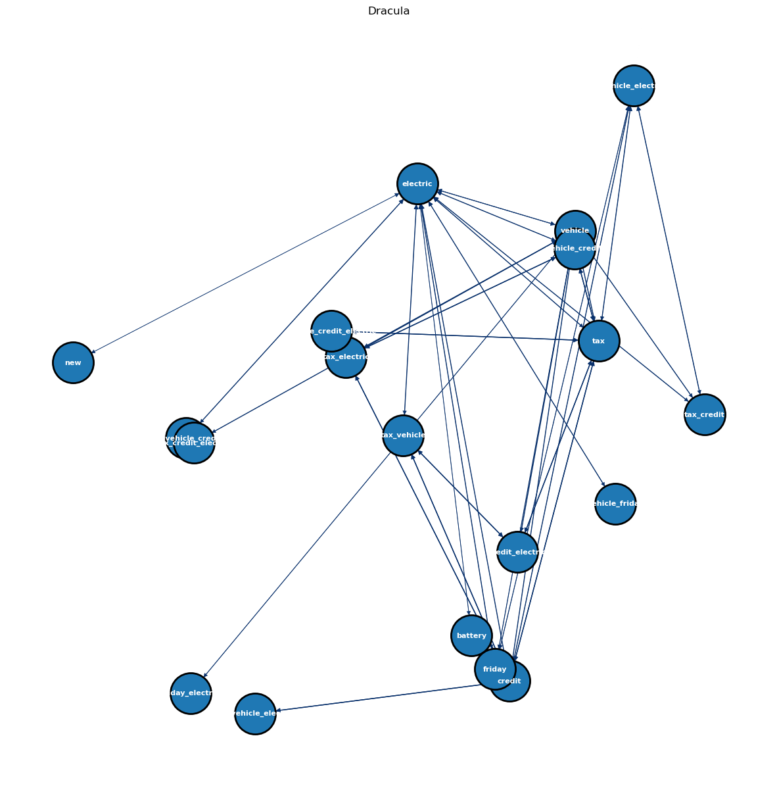

import nltk
import string
from nltk.stem import WordNetLemmatizer
from nltk.stem import PorterStemmer
from nltk.corpus import stopwords
from nltk.tokenize import word_tokenize
from nltk.sentiment import SentimentIntensityAnalyzer
import os
import matplotlib.pyplot as plt
import numpy as np
import pandas as pd
from apyori import apriori
import networkx as nx Association Rule Mining (ARM)
import requests
import json
# Base URL for the API endpoint
url = 'https://newsapi.org/v2/everything'
# Set all query parameters in a dictionary
params = {
'q': 'electric-vehicles', # Updated query
'from': '2023-11-03', # Starting date
'sortBy': 'publishedAt', # Sorting criterion
'apiKey': '481b1e4a75874d2f9a23e3329031364c'
}
# Make the GET request with the URL and parameters
response = requests.get(url, params=params)
# Convert the response to JSON format
json_data = response.json()
# Print the JSON response
print(json_data)
# Save the results in a JSON file
with open('electric_vehicles_news_data.json', 'w') as json_file:
json.dump(json_data, json_file, indent=4)
print("Data saved in electric_vehicles_news_data.json"){'status': 'ok', 'totalResults': 6310, 'articles': [{'source': {'id': None, 'name': 'Americanthinker.com'}, 'author': None, 'title': "Joe, we can't sell them", 'description': "How is that electric vehicle promotion going?\xa0 Well, the car dealers can't sell them.\xa0 They sent President Biden a letter calling for a change in strategy, as my old marketing professor used to say.\xa0This is\xa0the story:\r\n\r\n\r\nNea...", 'url': 'https://www.americanthinker.com/blog/2023/12/joe_we_cant_sell_them.html', 'urlToImage': 'https://www.americanthinker.com/images/bucket/2023-12/250507.jpg', 'publishedAt': '2023-12-02T06:00:00Z', 'content': "How is that electric vehicle promotion going?\xa0 Well, the car dealers can't sell them.\xa0 They sent President Biden a letter calling for a change in strategy, as my old marketing professor used to say.\xa0… [+1566 chars]"}, {'source': {'id': None, 'name': 'Feber.se'}, 'author': 'Frode Wikesjö', 'title': 'En släpptrailer för SteamWorld Build', 'description': 'Spelet släpptes i går\n\n\n\n\n\n\n\n\n\n\nUnder gårdagen släpptes det svenskutvecklade spelet SteamWorld Build till Windows, Xbox (Xbox Game Pass) och PlayStation. Spelet är det senaste tillskottet i den uppskattade SteamWorld-serien, där man tidigare har kunnat hitta …', 'url': 'https://feber.se/spel/en-slapptrailer-for-steamworld-build/458995/', 'urlToImage': 'https://i.ytimg.com/vi/04qCQ9DwdZ4/hqdefault.jpg', 'publishedAt': '2023-12-02T06:00:00Z', 'content': '+\r\nLäs artiklar före alla andra\r\nKommentera före alla andra\r\nVälj periodJu längre period, desto bättre pris. Du bestämmer! \r\nMånad\r\n39 kr/mån\r\nKvartal\r\n33 kr/mån\r\nÅr\r\n25 kr/mån\r\nVälj hur du vill beta… [+42250 chars]'}, {'source': {'id': None, 'name': 'Setopati.com'}, 'author': 'Prasanna Aryal :: A tripartite approach to combat climate change through comprehensive EV policies in Nepal', 'title': 'A tripartite approach to combat climate change through comprehensive EV policies in Nepal', 'description': 'In the face of global climate challenges, Nepal has the opportunity to become a beacon of change, showcasing how a united effort at all levels of government can drive the transformation toward\xa0a sustainable and eco-friendly future', 'url': ' https://en.setopati.com/view/162147 ', 'urlToImage': 'https://en.setopati.com/uploads/posts/EV1700709261.jpg', 'publishedAt': '2023-12-02T05:34:00Z', 'content': 'Nepal, with its breathtaking landscapes and cultural richness, is facing the harsh impacts of climate change. While global leaders engage in discussions at fancy conferences in COP28 Nepal is standin… [+8466 chars]'}, {'source': {'id': None, 'name': 'fox26houston.com'}, 'author': 'Tom Zizka', 'title': 'Most Texans unwilling to buy an electric vehicle, says UH-TSU study', 'description': 'A group of thousands of car dealers asked the White House this week to tap the brakes on an aggressive federal push toward putting more electric vehicles on the road.', 'url': 'https://www.fox26houston.com/news/uh-tsu-study-finds-most-texans-unwilling-to-buy-an-electric-vehicle', 'urlToImage': 'https://images.foxtv.com/static.fox26houston.com/www.fox26houston.com/content/uploads/2023/12/1280/720/55AD482007EEFE814968354575788DA3.jpg?ve=1&tl=1', 'publishedAt': '2023-12-02T04:54:33Z', 'content': 'HOUSTON - A group of thousands of car dealers have asked the White House to tap the brakes on an aggressive federal push toward putting more electric vehicles on the road. Those federal regulations s… [+2437 chars]'}, {'source': {'id': None, 'name': 'CleanTechnica'}, 'author': 'Zachary Shahan', 'title': 'NIO Sales Up 33.1%, Gets Geely in Another Battery Swapping Deal', 'description': 'NIO continues to grow in China. It may not be anywhere close to the sales of EV giants BYD and ... [continued]\nThe post NIO Sales Up 33.1%, Gets Geely in Another Battery Swapping Deal appeared first on CleanTechnica.', 'url': 'https://cleantechnica.com/2023/12/01/nio-sales-up-33-1-gets-geely-in-another-battery-swapping-deal/', 'urlToImage': 'https://cleantechnica.com/wp-content/uploads/2023/10/SideEC6-2.jpg', 'publishedAt': '2023-12-02T04:40:58Z', 'content': 'NIO continues to grow in China. It may not be anywhere close to the sales of EV giants BYD and Tesla, but it’s growing. Its November sales were up 12.6%, and its sales throughout the first 11 months … [+2810 chars]'}, {'source': {'id': None, 'name': 'GlobeNewswire'}, 'author': 'Unplugged Performance Inc.', 'title': 'Unplugged Performance Introduces UP INVINCIBLE®: A Game-Changer for Tesla Cybertruck Enthusiasts', 'description': 'Debut of Unplugged Performance UP INVINCIBLE new product line built around Tesla Cybertruck......', 'url': 'https://www.globenewswire.com/news-release/2023/12/02/2789610/0/en/Unplugged-Performance-Introduces-UP-INVINCIBLE-A-Game-Changer-for-Tesla-Cybertruck-Enthusiasts.html', 'urlToImage': 'https://ml.globenewswire.com/Resource/Download/7edd5354-8d25-47da-a4db-19ea925893ae', 'publishedAt': '2023-12-02T04:06:00Z', 'content': 'HAWTHORNE, Calif., Dec. 01, 2023 (GLOBE NEWSWIRE) -- Unplugged Performance, the industry leader in performance upgrades for Tesla vehicles, debuts a new chapter in Tesla tuning with the arrival of th… [+4623 chars]'}, {'source': {'id': None, 'name': 'Hurriyet Daily News'}, 'author': 'hurriyetdailynews.com', 'title': 'Tesla Cybertruck is\xa0Musk’s\xa0latest defiant bet', 'description': 'Tesla has begun customer deliveries of the Cybertruck, bringing to fruition an Elon Musk passion project that the billionaire boasts is stronger than bullets and faster than a Porsche.', 'url': 'https://www.hurriyetdailynews.com/tesla-cybertruck-is-musks-latest-defiant-bet-188278', 'urlToImage': 'https://image.hurimg.com/i/hurriyet/75/200x200/656a692b4e3fe10e840b07ec.jpg', 'publishedAt': '2023-12-02T04:00:00Z', 'content': 'DETROIT\r\nTesla has begun customer deliveries of the Cybertruck, bringing to fruition an Elon Musk passion project that the billionaire boasts is stronger than bullets and faster than a Porsche.\r\n"It\'… [+2543 chars]'}, {'source': {'id': None, 'name': 'GlobeNewswire'}, 'author': 'NaaS Technology Inc.', 'title': 'NaaS Technology Take Center Stage at COP28 to Accelerate Sustainability in Transport Energy Transformation', 'description': "DUBAI, UAE, Dec. 01, 2023 (GLOBE NEWSWIRE) -- NaaS Technology Inc. (NASDAQ: NAAS), the first U.S. listed EV charging service company in China, inaugurated the NaaS Exhibition Hall at the Dubai Chambers' China Innovation Centre, during the 28th United Nations …", 'url': 'https://www.globenewswire.com/news-release/2023/12/02/2789607/0/en/NaaS-Technology-Take-Center-Stage-at-COP28-to-Accelerate-Sustainability-in-Transport-Energy-Transformation.html', 'urlToImage': 'https://ml.globenewswire.com/Resource/Download/0b1e48d0-14c5-46e8-aac0-22a2639b97fe', 'publishedAt': '2023-12-02T03:28:00Z', 'content': 'DUBAI, UAE, Dec. 01, 2023 (GLOBE NEWSWIRE) -- NaaS Technology Inc. (NASDAQ: NAAS), the first U.S. listed EV charging service company in China, inaugurated the NaaS Exhibition Hall at the Dubai Chambe… [+4243 chars]'}, {'source': {'id': 'bbc-news', 'name': 'BBC News'}, 'author': 'https://www.facebook.com/bbcnews', 'title': 'Congo cobalt: TikTokers quit vaping amid mining concerns', 'description': 'A swell of online interest in the central African nation has young adults questioning what they puff.', 'url': 'https://www.bbc.co.uk/news/world-africa-67569996', 'urlToImage': 'https://ichef.bbci.co.uk/news/1024/branded_news/18254/production/_131900989_15fbde76-47ff-400c-9275-f18b6df62818.jpg', 'publishedAt': '2023-12-02T03:09:00Z', 'content': 'Dozens of young adults on TikTok are vowing to throw out their e-cigarettes and quit vaping - but not for health reasons.\r\n"In my effort to help [the Democratic Republic of] Congo, I\'m quitting vapin… [+4414 chars]'}, {'source': {'id': None, 'name': 'Biztoc.com'}, 'author': 'jalopnik.com', 'title': 'First Road In The U.S. That Charges Your EV While You Drive Opens In Detroit', 'description': 'The city that claims the first paved stretch of road in America added another first to its list: On Wednesday, Detroit became home to the first road in America that can charge electric vehicles as they drive. Of course, this technologically advanced bit of 14…', 'url': 'https://biztoc.com/x/22499dcc3d8b9c68', 'urlToImage': 'https://c.biztoc.com/p/22499dcc3d8b9c68/og.webp', 'publishedAt': '2023-12-02T02:28:08Z', 'content': 'The city that claims the first paved stretch of road in America added another first to its list: On Wednesday, Detroit became home to the first road in America that can charge electric vehicles as th… [+313 chars]'}, {'source': {'id': None, 'name': 'CleanTechnica'}, 'author': 'Zachary Shahan', 'title': 'Electric Vehicles & Hybrids = 18% of US New Vehicle Market', 'description': 'We normally just cover plugin vehicle sales here on CleanTechnica, and just full battery electric (BEV) sales for the US ... [continued]\nThe post Electric Vehicles & Hybrids = 18% of US New Vehicle Market appeared first on CleanTechnica.', 'url': 'https://cleantechnica.com/2023/12/01/electric-vehicles-hybrids-18-of-us-new-vehicle-market/', 'urlToImage': 'https://cleantechnica.com/wp-content/uploads/2023/12/BEV-and-hybrid-share-of-US-new-vehicle-sales-graph.png', 'publishedAt': '2023-12-02T01:56:13Z', 'content': 'Sign up for daily news updates from CleanTechnica on email. Or follow us on Google News!\r\nWe normally just cover plugin vehicle sales here on CleanTechnica, and just full battery electric (BEV) sales… [+3939 chars]'}, {'source': {'id': 'cbs-news', 'name': 'CBS News'}, 'author': 'Carter Evans', 'title': 'Auto industry eyes subscription fees as multi-billion-dollar revenue stream', 'description': 'General Motors projects subscription fees to bring in as much as $25 billion a year by 2030.', 'url': 'https://www.cbsnews.com/news/auto-industry-subscription-fees-offset-electric-vehicle-production-costs/', 'urlToImage': 'https://assets3.cbsnewsstatic.com/hub/i/r/2023/12/02/823ea6f8-6836-4e23-9a25-9338405e0dfb/thumbnail/1200x630/805e53c1008a4766b034584bc461cb13/1201-en-evans1.jpg?v=2a3c5d91939c9bf28fa0bc6fdfacfdd4', 'publishedAt': '2023-12-02T01:26:19Z', 'content': "Los Angeles — Jason Luu's 2020 Volvo XC90 has state-of-the-art remote features, such as the ability to start and stop the engine and unlock and lock the car from an app on his smart phone.\xa0\r\nBut if h… [+1798 chars]"}, {'source': {'id': None, 'name': 'CleanTechnica'}, 'author': 'Zachary Shahan', 'title': 'Record-Low EV Battery Prices in 2023', 'description': 'Thanks to a variety of factors, lithium-ion battery packs are at record low prices. After dropping 14%, they are down ... [continued]\nThe post Record-Low EV Battery Prices in 2023 appeared first on CleanTechnica.', 'url': 'https://cleantechnica.com/2023/12/01/record-low-ev-battery-prices/', 'urlToImage': 'https://cleantechnica.com/wp-content/uploads/2023/12/BNEF-battery-price-drop-chart.png', 'publishedAt': '2023-12-02T01:19:41Z', 'content': 'Sign up for daily news updates from CleanTechnica on email. Or follow us on Google News!\r\nThanks to a variety of factors, lithium-ion battery packs are at record low prices. After dropping 14%, they … [+6035 chars]'}, {'source': {'id': None, 'name': 'Boing Boing'}, 'author': 'Mark Frauenfelder', 'title': 'Twitter CEO praises Musk\'s bizarre "Go f*ck yourself" meltdown in memo to staff', 'description': 'This week, an agitated Elon Musk, while sitting on a stage in New York, told the high-powered audience that anyone who chose not to give him money could "Go f*ck yourself." Musk didn\'t look like he was in his right mind. — Read the rest', 'url': 'https://boingboing.net/2023/12/01/twitter-ceo-praises-musks-bizarre-go-fck-yourself-meltdown-in-memo-to-staff.html', 'urlToImage': 'https://i0.wp.com/boingboing.net/wp-content/uploads/2023/07/linda-Y.jpg?fit=1200%2C800&ssl=1', 'publishedAt': '2023-12-01T23:27:47Z', 'content': 'This week, an agitated Elon Musk, while sitting on a stage in New York, told the high-powered audience that anyone who chose not to give him money could "Go f*ck yourself." Musk didn\'t look like he w… [+2744 chars]'}, {'source': {'id': None, 'name': 'CleanTechnica'}, 'author': 'Zachary Shahan', 'title': 'Volkswagen Tries To Help Electric Car Buyers With Cool New Tools & Videos', 'description': 'It’s a difficult thing to jump from one technology to another, even when the new technology is much better and ... [continued]\nThe post Volkswagen Tries To Help Electric Car Buyers With Cool New Tools & Videos appeared first on CleanTechnica.', 'url': 'https://cleantechnica.com/2023/12/01/volkswagen-tries-to-help-electric-car-buyers-with-cool-new-tools-videos/', 'urlToImage': 'https://cleantechnica.com/wp-content/uploads/2023/12/Volkswagen-ID-3-UK.jpeg', 'publishedAt': '2023-12-01T23:07:03Z', 'content': 'Sign up for daily news updates from CleanTechnica on email. Or follow us on Google News!\r\nIt’s a difficult thing to jump from one technology to another, even when the new technology is much better an… [+4090 chars]'}, {'source': {'id': None, 'name': 'Biztoc.com'}, 'author': 'theregister.com', 'title': 'Electric vehicles earn shocking report card for reliability', 'description': "Consumer Reports' latest car reliability survey suggests electric vehicles (EVs) are causing owners more problems than their hybrid or conventional counterparts. According to the survey, based on owner responses on more than 330,000 vehicles, EVs from the pas…", 'url': 'https://biztoc.com/x/cee59c6280faa0ed', 'urlToImage': 'https://c.biztoc.com/p/cee59c6280faa0ed/og.webp', 'publishedAt': '2023-12-01T23:04:11Z', 'content': "Consumer Reports' latest car reliability survey suggests electric vehicles (EVs) are causing owners more problems than their hybrid or conventional counterparts.According to the survey, based on owne… [+294 chars]"}, {'source': {'id': 'cbc-news', 'name': 'CBC News'}, 'author': None, 'title': 'B.C. launching 4-year study on how e-scooters fit into transport system', 'description': 'Study allows for the collection of better health and safety data for use in addressing how to safely integrate e-scooters into the transportation system, province says.', 'url': 'https://www.cbc.ca/news/canada/british-columbia/b-c-launching-4-year-study-on-e-scooters-1.7046949', 'urlToImage': 'https://i.cbc.ca/1.5273992.1701468724!/fileImage/httpImage/image.jpg_gen/derivatives/16x9_620/usa-dailylife.jpg', 'publishedAt': '2023-12-01T22:43:14Z', 'content': 'The British Columbia government has launched another study to decide how e-scooters fit into the provincial transportation network.\r\nThe four-year safety review will start next April, and replaces an… [+753 chars]'}, {'source': {'id': None, 'name': 'Wnd.com'}, 'author': 'Bob Unruh', 'title': "Trump announces list of Biden problems he'll work to fix", 'description': "Huge numbers of Americans, as reflected by polling, are dissatisfied with America under Joe Biden's thumb. Could be because of his pro-transgender and pro-abortion demands, maybe that 9.1% inflation of a year ago, or his insistence that people buy expensive a…", 'url': 'https://www.wnd.com/2023/12/trump-announces-list-biden-problems-work-fix/', 'urlToImage': 'https://www.wnd.com/wp-content/uploads/2020/07/donald-trump-index-finger-pointing-gesturing.jpg', 'publishedAt': '2023-12-01T22:36:13Z', 'content': 'President Donald J. Trump gestures toward guests and staff as he disembarks Marine One on the South Lawn of the White House Monday, July 27, 2020, following his trip to North Carolina. (Official Whit… [+5538 chars]'}, {'source': {'id': None, 'name': 'Skift'}, 'author': 'Skift', 'title': 'Elon Musk Bets Americans Will Go Camping in Tesla Cybertrucks', 'description': "At the moment, Americans can't imagine camping in the woods using an electric vehicle. Maybe the cybertruck can change that. -Dawit Habtemariam", 'url': 'https://skift.com/2023/12/01/elon-musk-bets-americans-will-go-camping-in-tesla-cybertrucks/', 'urlToImage': 'https://skift.com/wp-content/uploads/2023/12/Cybertruck.jpeg', 'publishedAt': '2023-12-01T22:35:02Z', 'content': 'Telsa’s new cybertruck will be pricey and look weird but also cool and futuristic. And if you go camping with it, you can use a microwave in silence. \r\nTesla CEO Elon Musk unveiled the vehicle Thursd… [+2427 chars]'}, {'source': {'id': None, 'name': 'MarketWatch'}, 'author': 'Andrew Keshner', 'title': 'The Cybertruck’s best trick could be driving sales of this other Tesla model instead', 'description': 'Ever heard of a halo car?', 'url': 'https://www.marketwatch.com/story/the-cybertrucks-best-trick-could-be-driving-sales-of-this-other-tesla-model-instead-87da1fe1', 'urlToImage': 'https://images.mktw.net/im-67398866/social', 'publishedAt': '2023-12-01T22:31:00Z', 'content': 'People dont have to actually buy the Cybertruck to make it a hit for Tesla. They just need to come and look at it.While Elon Musks futuristic electric pickup truck looks nothing like a Chevrolet Corv… [+5272 chars]'}, {'source': {'id': None, 'name': 'CleanTechnica'}, 'author': 'Derek Markham', 'title': 'Designed By NASA For Mars Rovers, These Airless Bike Tires Will Never Go Flat', 'description': 'What would it be like to know you could ride your bike or e-bike virtually everywhere without the fear of ... [continued]\nThe post Designed By NASA For Mars Rovers, These Airless Bike Tires Will Never Go Flat appeared first on CleanTechnica.', 'url': 'https://cleantechnica.com/2023/12/01/designed-by-nasa-for-mars-rovers-these-airless-bike-tires-will-never-go-flat/', 'urlToImage': 'https://cleantechnica.com/wp-content/uploads/2023/12/METL_rawgravel-scaled.jpg', 'publishedAt': '2023-12-01T22:21:21Z', 'content': 'Sign up for daily news updates from CleanTechnica on email. Or follow us on Google News!\r\nWhat would it be like to know you could ride your bike or e-bike virtually everywhere without the fear of a f… [+4529 chars]'}, {'source': {'id': None, 'name': 'CarScoops'}, 'author': 'Sebastien Bell', 'title': 'First Tesla Cybertruck Reviews Are In, Here’s What They’re Saying', 'description': 'Although it has jaw-dropping performance, there are some small issues that make the Tesla Cybertruck an acquired taste', 'url': 'https://www.carscoops.com/2023/12/first-tesla-cybertruck-reviews-are-in-heres-what-theyre-saying/', 'urlToImage': 'https://www.carscoops.com/wp-content/uploads/2023/12/Tesla-Cybertruck-DRIVEN-18-13-screenshot-1-copy.jpg', 'publishedAt': '2023-12-01T22:17:35Z', 'content': 'Although it has jaw-dropping performance, there are some small issues that make the Tesla Cybertruck an acquired taste \r\nWe’ve seen the production version of the Cybertruck, we’ve seen the accessorie… [+5887 chars]'}, {'source': {'id': None, 'name': 'PBS'}, 'author': 'Bella Isaacs-Thomas', 'title': "Mining is necessary for the green transition. Here's why experts say we need to do it better", 'description': "How to balance the mining demands of the green transition with the industry's social and environmental implications is one of the many topics of discussion at the ongoing COP28 climate conference in Dubai.", 'url': 'https://www.pbs.org/newshour/science/mining-is-necessary-for-the-green-transition-heres-why-experts-say-we-need-to-do-it-better', 'urlToImage': 'https://d3i6fh83elv35t.cloudfront.net/static/2023/12/2023-04-20T141404Z_650662883_RC2YG0ANQH07_RTRMADP_3_SIGMA-LITHIUM-BRAZIL-1024x576.jpg', 'publishedAt': '2023-12-01T22:17:15Z', 'content': 'Before a solar panel can be installed on a roof or an electric bus can hit the streets, manufacturers first have to get their hands on key metals and minerals. But to meet the demands of the transiti… [+11849 chars]'}, {'source': {'id': None, 'name': 'CleanTechnica'}, 'author': 'José Pontes', 'title': '26% BEV Share In China! — China EV Sales Report', 'description': 'Plugin vehicles are all the rage in the Chinese auto market. Plugins scored more than 808,000 sales last month, up ... [continued]\nThe post 26% BEV Share In China! — China EV Sales Report appeared first on CleanTechnica.', 'url': 'https://cleantechnica.com/2023/12/01/26-bev-share-in-china-china-ev-sales-report/', 'urlToImage': 'https://cleantechnica.com/wp-content/uploads/2023/11/China-EV-Sales-October-2023.png', 'publishedAt': '2023-12-01T21:58:55Z', 'content': 'Sign up for daily news updates from CleanTechnica on email. Or follow us on Google News!\r\nPlugin vehicles are all the rage in the Chinese auto market. Plugins scored more than 808,000 sales last mont… [+14674 chars]'}, {'source': {'id': None, 'name': 'Forbes'}, 'author': 'Ewan Spence, Senior Contributor, \n Ewan Spence, Senior Contributor\n https://www.forbes.com/sites/ewanspence/', 'title': 'Android Circuit: Pixel 8 Pro’s Massive Update, Honor’s Folding Strategy, OnePlus 12 Confirmed', 'description': 'This week’s Android headlines; Galaxy S24 Ultra design leaks, Pixel 8 Pro AI updates, latest cameraphone shootout, Honor’s folding phone strategy, OnePlus 12 confirmed, Realme’s retail success, and more...', 'url': 'https://www.forbes.com/sites/ewanspence/2023/12/01/android-headlines-samsung-galaxy-s24-ultra-pixel8-pro-ai-honor-oneplus-realme/', 'urlToImage': 'https://imageio.forbes.com/specials-images/imageserve/6526dac82b984db3f31572fb/0x0.jpg?format=jpg&height=900&width=1600&fit=bounds', 'publishedAt': '2023-12-01T21:55:29Z', 'content': 'Taking a look back at seven days of news and headlines across the world of Android, this weeks Android Circuit includes Galaxy S24 Ultra design leaks, Pixel 8 Pro AI updates, latest cameraphone shoot… [+5407 chars]'}, {'source': {'id': None, 'name': 'Biztoc.com'}, 'author': 'bizjournals.com', 'title': 'Fisker cuts annual production outlook', 'description': 'Fisker now says it will produce slightly more than 10,000 electric vehicles for 2023. #fisker', 'url': 'https://biztoc.com/x/c553804879e5c6fe', 'urlToImage': 'https://c.biztoc.com/p/c553804879e5c6fe/s.webp', 'publishedAt': '2023-12-01T21:52:28Z', 'content': 'Fisker now says it will produce slightly more than 10,000 electric vehicles for 2023.\r\n#fisker\r\nThis story appeared on bizjournals.com, .'}, {'source': {'id': None, 'name': 'Marketscreener.com'}, 'author': None, 'title': 'Talon Metals Commends Draft Guidelines Implementing IRA "Foreign Entity of Concern" Requirements', 'description': '(marketscreener.com) Talon Metals Corp. , the majority owner and operator of the Tamarack Nickel Project in central Minnesota, commends the Biden Administration for new draft rules published today on the implementation of the "Foreign Entity of Concern" provi…', 'url': 'https://www.marketscreener.com/quote/stock/TALON-METALS-CORP-1409311/news/Talon-Metals-Commends-Draft-Guidelines-Implementing-IRA-Foreign-Entity-of-Concern-Requirements-45486358/', 'urlToImage': 'https://www.marketscreener.com/images/twitter_MS_fdnoir.png', 'publishedAt': '2023-12-01T21:40:01Z', 'content': 'Tamarack, Minnesota--(Newsfile Corp. - December 1, 2023) - Talon Metals Corp. (TSX: TLO) (OTC Pink: TLOFF) ("Talon" or the "Company"), the majority owner and operator of the Tamarack Nickel Project (… [+7418 chars]'}, {'source': {'id': None, 'name': 'Sfstandard.com'}, 'author': 'Joshua Bote', 'title': "Cruise Robotaxis: What's Next as GM Pulls Investment?", 'description': "GM is making a U-turn away from its investments in Cruise. What's next?", 'url': 'https://sfstandard.com/2023/12/01/cruise-future-gm-pullback/', 'urlToImage': 'https://content.sfstandard.com/wp-content/uploads/2023/11/20232011cruisefallout.jpg?resize=1200,630', 'publishedAt': '2023-12-01T21:32:55Z', 'content': 'For much of Mary Barras term as chief executive officer of General Motors, shes branded the stalwart automakerin earnings calls, marketing and public appearancesas a player in the technology space.\r\n… [+7686 chars]'}, {'source': {'id': None, 'name': 'The Boston Globe'}, 'author': 'Ana Swanson, Jack Ewing, Alan Rappeport', 'title': 'US to limit China’s ability to benefit from electric vehicle industry', 'description': 'The Biden administration proposed new rules Friday aimed at shifting more production of electric vehicle batteries and the materials that power them to the United States, in an attempt to build up a strategic industry now dominated by China.', 'url': 'https://www.bostonglobe.com/2023/12/01/business/us-limit-chinas-ability-benefit-electric-vehicle-industry/', 'urlToImage': 'https://www.bostonglobe.com/pf/resources/images/logo-bg.jpg?d=442', 'publishedAt': '2023-12-01T21:17:24Z', 'content': 'The Biden administration is trying to use billions of dollars in new federal funding to change that dynamic and create a US supply chain for electric vehicles, through both carrots and sticks.\r\nThe c… [+3909 chars]'}, {'source': {'id': None, 'name': 'Japan Today'}, 'author': None, 'title': 'Why hold U.N. climate talks 28 times? Do they even matter?', 'description': 'Ask most people what the annual U.N. climate talks are and the likely answer will be: “Huh?” Ask those who do know and the answer may be: “Why should I care?" The negotiations, called Conference of Parties, are nearly two weeks long and in their 28th ite…', 'url': 'https://japantoday.com/category/features/opinions/why-hold-un-climate-talks-28-times-do-they-even-matter', 'urlToImage': None, 'publishedAt': '2023-12-01T21:11:55Z', 'content': 'Ask most people what the annual U.N. climate talks are and the likely answer will be: Huh? Ask those who do know and the answer may be: Why should I care?"\r\nThe negotiations, called Conference of Par… [+6328 chars]'}, {'source': {'id': None, 'name': 'ETF Daily News'}, 'author': 'MarketBeat News', 'title': 'Tesla, Inc. (NASDAQ:TSLA) Shares Bought by Eqis Capital Management Inc.', 'description': 'Eqis Capital Management Inc. raised its position in Tesla, Inc. (NASDAQ:TSLA – Free Report) by 71.9% during the 2nd quarter, according to its most recent filing with the Securities and Exchange Commission (SEC). The fund owned 5,189 shares of the electric veh…', 'url': 'https://www.etfdailynews.com/2023/12/01/tesla-inc-nasdaqtsla-shares-bought-by-eqis-capital-management-inc/', 'urlToImage': 'https://www.americanbankingnews.com/wp-content/timthumb/timthumb.php?src=https://www.marketbeat.com/logos/tesla-inc-logo.png?v=20221020135629&w=240&h=240&zc=2', 'publishedAt': '2023-12-01T21:10:43Z', 'content': 'Eqis Capital Management Inc. raised its position in Tesla, Inc. (NASDAQ:TSLA – Free Report) by 71.9% during the 2nd quarter, according to its most recent filing with the Securities and Exchange Commi… [+6717 chars]'}, {'source': {'id': None, 'name': 'Electrek'}, 'author': 'Jameson Dow', 'title': 'Rivian already has a patent on Tesla’s Cybertruck ‘range extender’', 'description': 'Tesla delivered the first Cybertrucks yesterday, and with that delivery event came the revelation that in order to get the range it promised, the Cybertruck needs a separate battery pack in the bed. But a similar battery pack system was already patented years…', 'url': 'https://electrek.co/2023/12/01/rivian-already-has-a-patent-on-teslas-cybertruck-range-extender/', 'urlToImage': 'https://i0.wp.com/electrek.co/wp-content/uploads/sites/3/2023/12/Screen-Shot-2019-02-21-at-11.40.49-AM-e1550778199368.jpg?resize=1200%2C628&quality=82&strip=all&ssl=1', 'publishedAt': '2023-12-01T21:10:31Z', 'content': 'Tesla delivered the first Cybertrucks yesterday, and with that delivery event came the revelation that in order to get the range it promised, the Cybertruck needs a separate battery pack in the bed. … [+3839 chars]'}, {'source': {'id': None, 'name': 'Resilience'}, 'author': 'Tony Buck', 'title': 'Visit to a future sustainable neighborhood', 'description': 'As I took my first breath in this future neighborhood, the air had a fragrant quality that I didn’t recognize. I could hear a person shout something, maybe a block away. It’s much quieter than the world I left. There’s certainly a smell of home cooking in the…', 'url': 'https://www.resilience.org/stories/2023-12-01/visit-to-a-future-sustainable-neighborhood/', 'urlToImage': 'https://www.resilience.org/wp-content/uploads/2023/12/Jardin_en_permaculture.jpg', 'publishedAt': '2023-12-01T21:06:02Z', 'content': 'As I took my first breath in this future neighborhood, the air had a fragrant quality that I didnt recognize. I could hear a person shout something, maybe a block away. Its much quieter than the worl… [+5021 chars]'}, {'source': {'id': None, 'name': 'Marketscreener.com'}, 'author': None, 'title': 'Xos Announces 1-for-30 Reverse Stock Split', 'description': '(marketscreener.com) LOS ANGELES, Dec. 01, 2023 -- Xos, Inc. , a leading electric truck manufacturer and fleet electrification services provider, today announced that it intends to effect a 1-for-30 reverse stock split of its issued and outstanding shares of …', 'url': 'https://www.marketscreener.com/quote/stock/XOS-INC-A-126055032/news/Xos-Announces-1-for-30-Reverse-Stock-Split-45486085/', 'urlToImage': 'https://www.marketscreener.com/images/twitter_MS_fdblanc.png', 'publishedAt': '2023-12-01T21:06:01Z', 'content': 'LOS ANGELES, Dec. 01, 2023 (GLOBE NEWSWIRE) -- Xos, Inc. (Nasdaq: XOS), a leading electric truck manufacturer and fleet electrification services provider, today announced that it intends to effect a … [+7028 chars]'}, {'source': {'id': None, 'name': 'GlobeNewswire'}, 'author': 'Xos, Inc.', 'title': 'Xos Announces 1-for-30 Reverse Stock Split', 'description': 'LOS ANGELES, Dec. 01, 2023 (GLOBE NEWSWIRE) -- Xos, Inc. (Nasdaq: XOS), a leading electric truck manufacturer and fleet electrification services provider, today announced that it intends to effect a 1-for-30 reverse stock split of its issued and outstanding s…', 'url': 'https://www.globenewswire.com/news-release/2023/12/01/2789532/0/en/Xos-Announces-1-for-30-Reverse-Stock-Split.html', 'urlToImage': 'https://ml.globenewswire.com/Resource/Download/ba5fc2c7-4a00-43fc-b0d4-253b2ca3383a', 'publishedAt': '2023-12-01T21:05:00Z', 'content': 'LOS ANGELES, Dec. 01, 2023 (GLOBE NEWSWIRE) -- Xos, Inc. (Nasdaq: XOS), a leading electric truck manufacturer and fleet electrification services provider, today announced that it intends to effect a … [+7022 chars]'}, {'source': {'id': None, 'name': 'Forbes'}, 'author': 'Alan Ohnsman, Forbes Staff, \n Alan Ohnsman, Forbes Staff\n https://www.forbes.com/sites/alanohnsman/', 'title': 'The U.S. Is Further Along On Some Climate Goals Than Expected, Biden Administration Says', 'description': 'The COP28 delegation led by Vice President Kamala Harris said new federal efforts to accelerate clean energy launched by the Biden Administration set a meaningful...', 'url': 'https://www.forbes.com/sites/alanohnsman/2023/12/01/the-us-is-further-along-on-some-climate-goals-than-expected-biden-administration-says/', 'urlToImage': 'https://imageio.forbes.com/specials-images/imageserve/656a47917eda317dbe553058/0x0.jpg?format=jpg&height=900&width=1600&fit=bounds', 'publishedAt': '2023-12-01T21:02:55Z', 'content': 'COP28 takes place until 12 December 2023 in Dubai. \r\nNurPhoto via Getty Images\r\nThe worlds biggest carbon polluters are meeting at the COP28 global climate summit this month in Dubai amid growing con… [+3667 chars]'}, {'source': {'id': None, 'name': 'Bangkok Post'}, 'author': 'Takatoshi Ito', 'title': 'China and its self-inflicted economic woes', 'description': 'At their recent summit in San Francisco, US President Joe Biden and Chinese President Xi Jinping made progress in a few key areas. Notably, they agreed to resume direct military-to-military communications in order to reduce the chances of accidental conflict.…', 'url': 'https://www.bangkokpost.com/opinion/opinion/2696786/china-and-its-self-inflicted-economic-woes', 'urlToImage': 'https://www.bangkokpost.com/v3/assets/images/img-default.jpg', 'publishedAt': '2023-12-01T21:00:00Z', 'content': 'At their recent summit in San Francisco, US President Joe Biden and Chinese President Xi Jinping made progress in a few key areas. Notably, they agreed to resume direct military-to-military communica… [+4668 chars]'}, {'source': {'id': None, 'name': 'VOA News'}, 'author': 'webdesk@voanews.com (VOA News)', 'title': 'Rules Would Bar EV Tax Credits if Batteries, Minerals Linked to China', 'description': 'The U.S. proposed new guidelines Friday spelling out which electric vehicles will be eligible for tax credits, ruling out those that contain batteries or minerals sourced from China and other nations that have fallen out of favor with the U.S.\n\n\nThe restricti…', 'url': 'https://www.voanews.com/a/rules-would-bar-ev-tax-credits-if-batteries-minerals-linked-to-china/7380873.html', 'urlToImage': 'https://gdb.voanews.com/78ACDF10-D937-4BA0-94F6-8E0869E96411.jpg', 'publishedAt': '2023-12-01T20:59:49Z', 'content': 'The U.S. proposed new guidelines Friday spelling out which electric vehicles will be eligible for tax credits, ruling out those that contain batteries or minerals sourced from China and other nations… [+1313 chars]'}, {'source': {'id': None, 'name': 'MarketWatch'}, 'author': 'Associated Press', 'title': 'Associated Press: How the U.S. may make it harder for EV buyers to get a full tax credit', 'description': "If EV battery materials are from China, the car wouldn't qualify for a full $7,500 federal tax credit", 'url': 'https://www.marketwatch.com/story/how-the-u-s-may-make-it-harder-for-ev-buyers-to-get-a-full-tax-credit-56370966', 'urlToImage': 'https://images.mktw.net/im-95556346/social', 'publishedAt': '2023-12-01T20:59:00Z', 'content': 'WASHINGTON (AP) Americans could have a harder time finding electric vehicles that qualify for a full $7,500 federal tax credit under new rules proposed Friday that are likely to hinder President Joe … [+7398 chars]'}, {'source': {'id': None, 'name': 'Tech Xplore'}, 'author': 'Matthew Daly', 'title': 'New US rules, aimed at curbing China, could make it harder for EV buyers to claim a full tax credit', 'description': "Americans could have a harder time finding electric vehicles that qualify for a full $7,500 federal tax credit under new rules proposed Friday that are likely to hinder President Joe Biden's goal that half of new passenger vehicles sold in the U.S. run on ele…", 'url': 'https://techxplore.com/news/2023-12-aimed-curbing-china-harder-ev.html', 'urlToImage': 'https://scx2.b-cdn.net/gfx/news/hires/2023/new-us-rules-aimed-at.jpg', 'publishedAt': '2023-12-01T20:31:31Z', 'content': "Americans could have a harder time finding electric vehicles that qualify for a full $7,500 federal tax credit under new rules proposed Friday that are likely to hinder President Joe Biden's goal tha… [+8052 chars]"}, {'source': {'id': None, 'name': 'redmondpie.com'}, 'author': 'Oliver Haslam', 'title': 'Tesla’s Cybertruck Will Charge Other EVs And Power Your House', 'description': "Tesla's Cybertruck will charge other EVs and power your house as well. Here are all the details on this.\nThe post Tesla’s Cybertruck Will Charge Other EVs And Power Your House first appeared on Redmond Pie.", 'url': 'https://www.redmondpie.com/teslas-cybertruck-will-charge-other-evs-and-power-your-house/', 'urlToImage': 'https://cdn.redmondpie.com/wp-content/uploads/2023/12/image_2023-12-01_185003761.png', 'publishedAt': '2023-12-01T20:09:19Z', 'content': 'Following the news that Tesla has finally taken the wraps off Cybertruck pricing and specifications there is one spec in particular that might be of interest to some. For the first time Tesla is offe… [+1455 chars]'}, {'source': {'id': None, 'name': 'Boston Herald'}, 'author': 'Tribune News Service', 'title': 'Some of what was true, and not, from debate between Govs. Newsom and DeSantis', 'description': 'The 90-minute exchange, moderated by Fox News commentator Sean Hannity, covered topics ranging from the economy to abortion to homelessness to the Israel-Hamas war.', 'url': 'https://www.bostonherald.com/2023/12/01/some-of-what-was-true-and-not-from-debate-between-govs-newsom-and-desantis/', 'urlToImage': 'https://www.bostonherald.com/wp-content/uploads/2023/11/Untitled.jpeg?w=1024&h=683', 'publishedAt': '2023-12-01T19:52:08Z', 'content': 'By Gillian Brassil and Ari Plachta, McClatchy Washington Bureau\r\nGovs. Gavin Newsom and Ron DeSantis expended much energy accusing one another of lying at their debate Thursday night.\r\nA blizzard of … [+7592 chars]'}, {'source': {'id': None, 'name': 'Autoblog'}, 'author': 'James Riswick', 'title': "Tesla Cybertruck's amazing feats lack context and details (so don't get too excited)", 'description': "Filed under:\nGreen,Tesla,Truck,Electric,Future Vehicles,Off-Road Vehicles,Performance\n\nContinue reading Tesla Cybertruck's amazing feats lack context and details (so don't get too excited)\n\nTesla Cybertruck's amazing feats lack context and details (so don't g…", 'url': 'https://www.autoblog.com/2023/12/01/tesla-cybertruck-amazing-feats/', 'urlToImage': 'https://s.aolcdn.com/images/dims3/GLOB/legacy_thumbnail/1062x597/format/jpg/quality/100/https://s.aolcdn.com/os/ab/_cms/2023/12/01142838/Cybertruck-crash-test.jpg', 'publishedAt': '2023-12-01T19:51:00Z', 'content': 'Im not sure if I ever will, but I very much want to drive a Tesla Cybertruck. I mean, look at that thing. Distinctive, weird or just plain ridiculous cars have always been the most interesting cars, … [+10244 chars]'}, {'source': {'id': None, 'name': 'Observer'}, 'author': 'Sissi Cao, Sissi Cao', 'title': 'Elon Musk Reveals Cybertruck Prices and Sells a $55 Shattered Window Decal', 'description': 'The strength of the Cybertruck\'s "armored glass" window remains a mystery.', 'url': 'https://observer.com/2023/12/tesla-begin-cybertruck-delivery-price/', 'urlToImage': 'https://observer.com/wp-content/uploads/sites/2/2023/11/GettyImages-1183883122.jpg?quality=80&w=635&h=404', 'publishedAt': '2023-12-01T19:24:38Z', 'content': 'Tesla’s Cybertruck was originally priced at just under $40,000. FREDERIC J. BROWN/AFP via Getty Images\r\nFour years after its dashing reveal, the Tesla (TSLA) Cybertruck is finally starting to roll of… [+3251 chars]'}, {'source': {'id': None, 'name': 'BGR'}, 'author': 'Joe Wituschek', 'title': 'All the weird announcements from Tesla’s Cybertruck delivery event', 'description': 'The Cybertruck is finally here! Yesterday, Tesla held its long-awaited delivery event, and Tesla CEO Elon Musk, fresh off his X interview where he told …\nThe post All the weird announcements from Tesla’s Cybertruck delivery event appeared first on BGR.', 'url': 'https://bgr.com/lifestyle/all-the-weird-announcements-from-teslas-cybertruck-delivery-event/', 'urlToImage': 'https://bgr.com/wp-content/uploads/2023/10/tesla-cybertruck-interior.jpeg?quality=82&strip=all', 'publishedAt': '2023-12-01T19:22:44Z', 'content': 'The Cybertruck is finally here! Yesterday, Tesla held its long-awaited delivery event, and Tesla CEO Elon Musk, fresh off his X interview where he told fleeing advertisers to go fudge themselves, han… [+3511 chars]'}, {'source': {'id': None, 'name': 'Forbes'}, 'author': 'Brad Templeton, Senior Contributor, \n Brad Templeton, Senior Contributor\n https://www.forbes.com/sites/bradtempleton/', 'title': 'Does The Dept. Of Transport Know What To Do With $7B For EV Charging?', 'description': "They have $7B to spend, but previous subsidies caused a broken charging network. Here's how to do it better", 'url': 'https://www.forbes.com/sites/bradtempleton/2023/12/01/does-the-dept-of-transport-know-what-to-do-with-7b-for-ev-charging/', 'urlToImage': 'https://imageio.forbes.com/specials-images/imageserve/656a2d00bdeceb72dd14f9db/0x0.jpg?format=jpg&height=900&width=1600&fit=bounds', 'publishedAt': '2023-12-01T19:20:57Z', 'content': "Charging from the sun can happen, if there's slow charging in commuter parking\r\ngetty\r\nA variety of recent bills and programs have allocated over $7 billion to build up the EV charging infrastructure… [+23530 chars]"}, {'source': {'id': None, 'name': 'Freerepublic.com'}, 'author': 'Independent Sentinel', 'title': 'Nearly 4,000 Car Dealers Beg Biden to Stop as EVs Kill Profits', 'description': 'Nearly 4,000 car dealerships are begging Joe Biden to pull back on the “unrealistic” EV mandates. The EVs are piling up on lots and carmakers are losing billions of dollars. A group of 3,882 dealers sent President Biden a letter begging him to lighten future …', 'url': 'https://freerepublic.com/focus/f-chat/4200565/posts', 'urlToImage': None, 'publishedAt': '2023-12-01T19:20:19Z', 'content': 'Skip to comments.\r\nNearly 4,000 Car Dealers Beg Biden to Stop as EVs Kill ProfitsIndependent Sentinel ^\r\n | November 30, 2023\r\n | By M Dowling -\r\nPosted on 12/01/2023 11:20:19 AM PST by Red Badger\r\nN… [+5623 chars]'}, {'source': {'id': None, 'name': 'Forbes'}, 'author': 'Owen Tedford, Contributor, \n Owen Tedford, Contributor\n https://www.forbes.com/sites/owentedford/', 'title': 'Biden’s Next Export Controls Targets Are Uncertain', 'description': 'After finalizing his semiconductor export controls, where President Biden may look next is unclear leaving lawmakers and lobbyists looking to make their mark.', 'url': 'https://www.forbes.com/sites/owentedford/2023/12/01/bidens-next-export-controls-targets-are-uncertain/', 'urlToImage': 'https://imageio.forbes.com/specials-images/imageserve/656a2f211a38c0e5599184a1/0x0.jpg?format=jpg&height=900&width=1600&fit=bounds', 'publishedAt': '2023-12-01T19:19:09Z', 'content': 'WASHINGTON, DC - FEBRUARY 24: U.S. President Joe Biden holds a semiconductor during his remarks ... [+] before signing an Executive Order on the economy in the State Dining Room of the White House on… [+4978 chars]'}, {'source': {'id': None, 'name': 'Investing.com'}, 'author': 'Investing.com', 'title': 'U.S. to impose limitations on Chinese battery content for EV tax credits', 'description': 'U.S. to impose limitations on Chinese battery content for EV tax credits', 'url': 'https://www.investing.com/news/stock-market-news/us-to-impose-limitations-on-chinese-battery-content-for-ev-tax-credits-432SI-3248041', 'urlToImage': 'https://i-invdn-com.investing.com/news/LYNXMPED6O0QG_L.jpg', 'publishedAt': '2023-12-01T19:14:02Z', 'content': 'U.S. President Joe Biden and his administration released guidance on Friday that will impose restrictions on Chinese content allowed in batteries qualifying for electric vehicle (EV) tax credits begi… [+1860 chars]'}, {'source': {'id': None, 'name': 'Biztoc.com'}, 'author': 'theregister.com', 'title': 'Electric vehicles earn shocking report card for reliability', 'description': "Consumer Reports' latest car reliability survey suggests electric vehicles (EVs) are causing owners more problems than their hybrid or conventional counterparts. According to the survey, based on owner responses on more than 330,000 vehicles, EVs from the pas…", 'url': 'https://biztoc.com/x/f08ad29286252f05', 'urlToImage': 'https://c.biztoc.com/p/f08ad29286252f05/s.webp', 'publishedAt': '2023-12-01T19:12:16Z', 'content': "Consumer Reports' latest car reliability survey suggests electric vehicles (EVs) are causing owners more problems than their hybrid or conventional counterparts.According to the survey, based on owne… [+294 chars]"}, {'source': {'id': None, 'name': 'Feber.se'}, 'author': 'Bobby Green', 'title': 'Intervju med han som köpte Emily GT', 'description': 'Spännande...\n\n\n\n\n\n\n\n\n\n\nTidigare idag fick vi reda på att Nevs elbil Emily GT blivit uppköpt av det libanesiska företaget EV Electra. Det drivs av entreprenören Jihad Mohammad och han var idag på plats i Göteborg där det var elbilsmässa och där Emily GT ställd…', 'url': 'https://feber.se/bil/intervju-med-han-som-kopte-emily-gt/459001/', 'urlToImage': 'https://i.ytimg.com/vi/fb/620466136773263/hqdefault.jpg', 'publishedAt': '2023-12-01T19:05:00Z', 'content': '+\r\nLäs artiklar före alla andra\r\nKommentera före alla andra\r\nVälj periodJu längre period, desto bättre pris. Du bestämmer! \r\nMånad\r\n39 kr/mån\r\nKvartal\r\n33 kr/mån\r\nÅr\r\n25 kr/mån\r\nVälj hur du vill beta… [+47817 chars]'}, {'source': {'id': 'fox-news', 'name': 'Fox News'}, 'author': 'Thomas Catenacci', 'title': 'Joe Manchin goes scorched-earth on Biden admin over EV actions boosting China', 'description': 'Democratic West Virginia Sen. Joe Manchin is blasting the Biden administration and accusing it of breaking the law after the Treasury Department released electric vehicle guidance.', 'url': 'https://www.foxnews.com/politics/joe-manchin-goes-scorched-earth-biden-admin-ev-actions-boosting-china', 'urlToImage': 'https://static.foxnews.com/foxnews.com/content/uploads/2023/11/BIDEN-MANCHIN-SPLIT.jpg', 'publishedAt': '2023-12-01T19:04:32Z', 'content': 'Democratic West Virginia Sen. Joe Manchin scorched the Biden administration on Friday after it released federal guidance allowing Chinese companies to exploit taxpayer electric vehicle (EV) tax credi… [+4831 chars]'}, {'source': {'id': 'abc-news', 'name': 'ABC News'}, 'author': 'MATTHEW DALY Associated Press', 'title': 'New US rules, aimed at curbing China, could make it harder for EV buyers to claim a full tax credit', 'description': 'Americans could have a harder time finding electric vehicles that qualify for a full $7,500 federal tax credit under new rules being proposed', 'url': 'https://abcnews.go.com/US/wireStory/new-us-rules-aimed-curbing-china-limit-tax-105302596', 'urlToImage': 'https://i.abcnewsfe.com/a/5b1a3650-17bc-42e8-ad47-9bed26387579/wirestory_106c145cb3650e41d65bbe019f38bc27_16x9.jpg?w=992', 'publishedAt': '2023-12-01T19:02:26Z', 'content': 'WASHINGTON -- Americans could have a harder time finding electric vehicles that qualify for a full $7,500 federal tax credit under new rules proposed Friday that are likely to hinder President Joe Bi… [+7503 chars]'}, {'source': {'id': None, 'name': 'Theregister.com'}, 'author': 'Richard Speed', 'title': 'Electric vehicles earn shocking report card for reliability', 'description': "Legacy auto makers struggle with new tech, and upstarts suffer teething problems with first cars Consumer Reports' latest car reliability survey suggests electric vehicles (EVs) are causing owners more problems than their hybrid or conventional counterparts.…", 'url': 'https://www.theregister.com/2023/12/01/electric_vehicle_reliability/', 'urlToImage': 'https://regmedia.co.uk/2021/10/18/car_shutterstock.jpg', 'publishedAt': '2023-12-01T19:02:11Z', 'content': "Consumer Reports' latest car reliability survey suggests electric vehicles (EVs) are causing owners more problems than their hybrid or conventional counterparts.\r\nAccording to the survey, based on ow… [+2604 chars]"}, {'source': {'id': 'abc-news-au', 'name': 'ABC News (AU)'}, 'author': 'Daniel Mercer', 'title': "What is COP28? Here's what to expect at this year's UN climate talks", 'description': "Talks about how to wean the world off fossil fuels are taking place in one of the globe's leading petrostates. Massive increases in green energy and who should pay will be up for discussion.", 'url': 'https://www.abc.net.au/news/2023-12-02/australian-cop28-explainer/103167354', 'urlToImage': 'https://live-production.wcms.abc-cdn.net.au/f6dfa2e5795509c553be5c9e2fdcb505?impolicy=wcms_crop_resize&cropH=2813&cropW=5000&xPos=0&yPos=540&width=862&height=485', 'publishedAt': '2023-12-01T19:00:00Z', 'content': "It says a lot about a topic when it has its own shorthand, an abbreviation that's widely recognised even if its genesis or meaning isn't.\r\nSuch is the case with what's widely known as COP.\r\nIn total,… [+8415 chars]"}, {'source': {'id': None, 'name': 'Feber.se'}, 'author': 'Hugo Engström', 'title': 'Tips: Visa fler appar i förslag på iOS', 'description': '100% större chans att träffa rätt\n\n\n\n\n\n\nJag visade en grej för Roger idag som han inte visste om, så jag tänkte att jag tipsar alla er andra också. När man drar ner på hemskärmen i iOS så får man fyra appar som förslag från Siri. Jag och Roger pratade om att …', 'url': 'https://feber.se/mobil/tips-visa-fler-appar-i-forslag-pa-ios/458992/', 'urlToImage': 'https://static.feber.se/article_images/57/72/88/577288.jpg', 'publishedAt': '2023-12-01T19:00:00Z', 'content': '+\r\nLäs artiklar före alla andra\r\nKommentera före alla andra\r\nVälj periodJu längre period, desto bättre pris. Du bestämmer! \r\nMånad\r\n39 kr/mån\r\nKvartal\r\n33 kr/mån\r\nÅr\r\n25 kr/mån\r\nVälj hur du vill beta… [+47985 chars]'}, {'source': {'id': None, 'name': 'Biztoc.com'}, 'author': 'investorplace.com', 'title': 'NIO Stock Alert: Nio’s November Deliveries Jumped 12% Year Over Year', 'description': 'Nio delivered a total of 55,432 vehicles during the third quarter Shares of Nio (NYSE:NIO) are trading lower after the Chinese electric vehicle ( ) company reported its deliveries for the month of November. Nio delivered 15,959 vehicles, up by 12.6% year over…', 'url': 'https://biztoc.com/x/ffb6212a5e070155', 'urlToImage': 'https://c.biztoc.com/p/ffb6212a5e070155/s.webp', 'publishedAt': '2023-12-01T18:47:25Z', 'content': 'Nio delivered a total of 55,432 vehicles during the third quarterShares of Nio (NYSE:NIO) are trading lower after the Chinese electric vehicle ( ) company reported its deliveries for the month of Nov… [+273 chars]'}, {'source': {'id': None, 'name': 'EFF'}, 'author': 'Matthew Guariglia', 'title': 'U.S. Senator: What Do Our Cars Know? And Who Do They Share that Information With?', 'description': 'U.S. Senator Ed Markey of Massachusetts has sent a much-needed letter to car manufacturers asking them to clarify a surprisingly hard question to answer: what data cars collect? Who has the ability to access that data? Private companies can often be a black b…', 'url': 'https://www.eff.org/deeplinks/2023/12/us-senator-what-do-our-cars-know-and-who-do-they-share-information', 'urlToImage': 'https://www.eff.org/files/banner_library/surveillance-og-2.png', 'publishedAt': '2023-12-01T18:44:12Z', 'content': 'U.S. Senator Ed Markey of Massachusetts has sent a much-needed letter to car manufacturers asking them to clarify a surprisingly hard question to answer: what data cars collect? Who has the ability t… [+2155 chars]'}, {'source': {'id': 'cbs-news', 'name': 'CBS News'}, 'author': 'CBS News', 'title': 'Inside the rise of the subscription economy', 'description': "Subscriptions aren't just for streaming services. Groceries, clothes, pet supplies and even extra horsepower for Mercedes-Benz' electric vehicles can now be bought for a monthly fee. David Mack, a freelance writer and reporter who recently wrote a New York Ti…", 'url': 'https://www.cbsnews.com/video/inside-the-rise-of-the-subscription-economy/', 'urlToImage': 'https://assets1.cbsnewsstatic.com/hub/i/r/2023/12/01/057aeb25-0bd0-406c-8b7b-5ada5132cd7c/thumbnail/1200x630/77a3f0812c05d399dc29c2917e32d1d8/cbsn-fusion-inside-the-rise-of-the-subscription-economy-thumbnail-2494487-640x360.jpg?v=2a3c5d91939c9bf28fa0bc6fdfacfdd4', 'publishedAt': '2023-12-01T18:43:44Z', 'content': 'Copyright ©2023 CBS Interactive Inc. All rights reserved.'}, {'source': {'id': None, 'name': 'Feber.se'}, 'author': 'Roger Åberg', 'title': 'Tesla säljer krossat fönster som dekal', 'description': 'Såklart\n\n\n\n\n\n\n\n\n\n\n\n\nDet har varit lite överdos på Tesla idag, jag lovar att det här är den sista artikeln för dagen. När Tesla visade upp Cybertruck för första gången så skulle man visa hur starkt glas man hade i fönstret, men det gick åt pipsvängen. Glaset g…', 'url': 'https://feber.se/bil/tesla-saljer-krossat-fonster-som-dekal/458993/', 'urlToImage': 'https://static.feber.se/article_images/57/72/89/577289.jpg', 'publishedAt': '2023-12-01T18:40:00Z', 'content': '+\r\nLäs artiklar före alla andra\r\nKommentera före alla andra\r\nVälj periodJu längre period, desto bättre pris. Du bestämmer! \r\nMånad\r\n39 kr/mån\r\nKvartal\r\n33 kr/mån\r\nÅr\r\n25 kr/mån\r\nVälj hur du vill beta… [+47969 chars]'}, {'source': {'id': 'politico', 'name': 'Politico'}, 'author': 'Erin Banco', 'title': 'Inside the Biden administration’s secret deal to stop a war in Congo', 'description': 'The U.S. drew up a multi-part deal for the two countries to deescalate fighting between their forces.', 'url': 'https://www.politico.com/news/2023/12/01/biden-congo-war-00129620', 'urlToImage': 'https://static.politico.com/d2/f6/a7053d6741ef9da598bdde0cadf4/congo-rwanda-tensions-09355.jpg', 'publishedAt': '2023-12-01T18:34:16Z', 'content': 'The Biden administration previously said that Director of National Intelligence Avril Haines flew to the region last week to secure commitments from Congolese and Rwandan leaders to deescalate fighti… [+7293 chars]'}, {'source': {'id': None, 'name': 'Biztoc.com'}, 'author': 'fortune.com', 'title': 'Buyers of EVs with batteries from China get dinged under new Biden administration rules for tax credits', 'description': 'The government proposed new rules Friday that could make it harder for electric vehicles to qualify for a full $7,500 federal tax credit, complicating efforts to meet President Joe Biden’s goal that half of new passenger vehicles sold in the U.S. run on elect…', 'url': 'https://biztoc.com/x/2375b2deaaedf8e2', 'urlToImage': 'https://c.biztoc.com/p/2375b2deaaedf8e2/s.webp', 'publishedAt': '2023-12-01T18:30:05Z', 'content': 'The government proposed new rules Friday that could make it harder for electric vehicles to qualify for a full $7,500 federal tax credit, complicating efforts to meet President Joe Bidens goal that h… [+293 chars]'}, {'source': {'id': None, 'name': 'Robb Report'}, 'author': 'Bryan Hood', 'title': 'The Tesla Cybertruck Isn’t Everything It Was Promised But It’s Finally Here', 'description': 'The EV maker delivered the first finished examples of its battery-powered pickup.', 'url': 'https://robbreport.com/motors/cars/tesla-first-cybertrucks-details-1235433958/', 'urlToImage': 'https://robbreport.com/wp-content/uploads/2023/12/Cybertruck_79.jpg?w=681&h=383&crop=1', 'publishedAt': '2023-12-01T18:30:00Z', 'content': 'After four long years, the Tesla Cybertruck is finally here.\r\nOn Thursday, the EV maker delivered the first “production” examples of its battery-powered pick-up truck to a group of delirious customer… [+4172 chars]'}, {'source': {'id': None, 'name': 'Biztoc.com'}, 'author': 'asia.nikkei.com', 'title': "China's graphite export curbs take effect with uncertainty for EVs", 'description': "BEIJING -- China on Friday began requiring government approval for exports of graphite, a key material for batteries used in electric vehicles, in an apparent counter to U.S.-led curbs targeting China's tech sector. The measure is based on legislation to stre…", 'url': 'https://biztoc.com/x/391e18622a06398f', 'urlToImage': 'https://c.biztoc.com/p/391e18622a06398f/s.webp', 'publishedAt': '2023-12-01T18:28:52Z', 'content': 'BEIJING -- China on Friday began requiring government approval for exports of graphite, a key material for batteries used in electric vehicles, in an apparent counter to U.S.-led curbs targeting Chin… [+236 chars]'}, {'source': {'id': 'fortune', 'name': 'Fortune'}, 'author': 'Matthew Daly, The Associated Press', 'title': 'Buyers of EVs with batteries from China get dinged under new Biden administration rules for tax credits', 'description': 'Biden wants half of new cars to be electric by 2030—but new rules proposed Friday would effectively raise prices on EVs with Chinese batteries.', 'url': 'https://fortune.com/2023/12/01/ev-tax-credits-electric-vehicle-china-battery/', 'urlToImage': 'https://content.fortune.com/wp-content/uploads/2023/12/AP23335086763953-e1701454938540.jpg?resize=1200,600', 'publishedAt': '2023-12-01T18:25:04Z', 'content': 'The government proposed new rules Friday that could make it harder for electric vehicles to qualify for a full $7,500 federal tax credit, complicating efforts to meet President Joe Bidens goal that h… [+7450 chars]'}, {'source': {'id': None, 'name': 'ETF Daily News'}, 'author': 'MarketBeat News', 'title': 'Forager Capital Management LLC Buys 69,795 Shares of Garrett Motion Inc. (NYSE:GTX)', 'description': 'Forager Capital Management LLC raised its stake in Garrett Motion Inc. (NYSE:GTX – Free Report) by 3.1% during the second quarter, according to its most recent disclosure with the Securities and Exchange Commission (SEC). The fund owned 2,313,558 shares of th…', 'url': 'https://www.etfdailynews.com/2023/12/01/forager-capital-management-llc-buys-69795-shares-of-garrett-motion-inc-nysegtx/', 'urlToImage': 'https://www.americanbankingnews.com/wp-content/timthumb/timthumb.php?src=https://www.marketbeat.com/logos/garrett-motion-inc-logo.PNG?v=20201124120545&w=240&h=240&zc=2', 'publishedAt': '2023-12-01T18:20:41Z', 'content': 'Forager Capital Management LLC raised its stake in Garrett Motion Inc. (NYSE:GTX – Free Report) by 3.1% during the second quarter, according to its most recent disclosure with the Securities and Exch… [+3792 chars]'}, {'source': {'id': None, 'name': 'Feber.se'}, 'author': 'Hugo Engström', 'title': 'Apple Watch har haft sitt bästa tredje kvartal hittills', 'description': 'Trots små uppdateringar för årets modeller\n\n\n\n\n\n\nApple ökade sina leveranser av Apple Watch med 7 procent jämfört med förra året enligt siffror från Counterpoint Research. Detta ska ha relaterat till att den smarta klockan haft sitt bästa tredje kvartal någon…', 'url': 'https://feber.se/mobil/apple-watch-har-haft-sitt-basta-tredje-kvartal-hittills/458991/', 'urlToImage': 'https://static.feber.se/article_images/57/72/87/577287.jpg', 'publishedAt': '2023-12-01T18:20:00Z', 'content': '+\r\nLäs artiklar före alla andra\r\nKommentera före alla andra\r\nVälj periodJu längre period, desto bättre pris. Du bestämmer! \r\nMånad\r\n39 kr/mån\r\nKvartal\r\n33 kr/mån\r\nÅr\r\n25 kr/mån\r\nVälj hur du vill beta… [+47814 chars]'}, {'source': {'id': None, 'name': 'Marketscreener.com'}, 'author': None, 'title': 'US to limit Chinese firms, battery parts from winning EV tax credits', 'description': '(marketscreener.com) The Biden administration\non Friday issued-long awaited guidance that will limit Chinese\ncontent in batteries eligible for electric vehicle tax credits\nstarting next year.\n In a win for automakers, the U.S. Treasury will temporarily\nexempt…', 'url': 'https://www.marketscreener.com/quote/stock/GENERAL-MOTORS-COMPANY-6873535/news/US-to-limit-Chinese-firms-battery-parts-from-winning-EV-tax-credits-45485486/', 'urlToImage': 'https://www.marketscreener.com/images/twitter_MS_fdblanc.png', 'publishedAt': '2023-12-01T18:18:58Z', 'content': 'WASHINGTON, Dec 1 (Reuters) - The Biden administration\r\non Friday issued-long awaited guidance that will limit Chinese\r\ncontent in batteries eligible for electric vehicle tax credits\r\nstarting next y… [+3097 chars]'}, {'source': {'id': None, 'name': 'NDTV News'}, 'author': None, 'title': "Italy PM Giorgia Meloni's Selfie With PM Modi At COP28", 'description': "Italy's Prime Minister Giorgia Meloni posted a selfie with her Indian counterpart Narendra Modi on the sidelines of the COP28 climate summit in Dubai.", 'url': 'https://www.ndtv.com/india-news/italy-pm-giorgia-melonis-selfie-with-pm-modi-at-cop28-4625913', 'urlToImage': 'https://c.ndtvimg.com/2023-12/0p6bt578_pm-modi-italy-pm-selfie_625x300_01_December_23.jpeg?ver-20231128.06', 'publishedAt': '2023-12-01T18:15:55Z', 'content': "In his COP28 speech, PM Modi called on all nations to work together to cut global emissions.\r\nItaly's Prime Minister Giorgia Meloni posted a selfie with her Indian counterpart Narendra Modi on the si… [+2404 chars]"}, {'source': {'id': None, 'name': 'Biztoc.com'}, 'author': 'barrons.com', 'title': 'GM CFO Says EV Demand and Profitability Picture Aren’t So Bad', 'description': 'General Motors, and GM stock, have been caught in a perfect storm in 2023. The economy is slowing, labor costs are rising, and it isn’t selling electric vehicles as fast as the company hoped.#generalmotors', 'url': 'https://biztoc.com/x/d29169e4f8511e7a', 'urlToImage': 'https://c.biztoc.com/p/d29169e4f8511e7a/s.webp', 'publishedAt': '2023-12-01T18:02:36Z', 'content': 'General Motors, and GM stock, have been caught in a perfect storm in 2023. The economy is slowing, labor costs are rising, and it isnt selling electric vehicles as fast as the company hoped.\r\n#genera… [+45 chars]'}, {'source': {'id': None, 'name': 'Ieee.org'}, 'author': 'Glenn Zorpette', 'title': 'Farewell, Philip E. Ross', 'description': 'Here’s a pretty reliable sign you’re having a great career in journalism: You’re meeting exceptionally interesting people on a regular basis. Indeed, some of them are people you work with every day.All of us at IEEE Spectrum have experienced that good fortune…', 'url': 'https://spectrum.ieee.org/philip-e-ross', 'urlToImage': 'https://spectrum.ieee.org/media-library/photo-of-a-man-in-glasses-and-a-red-sweater.jpg?id=50594154&width=1200&height=600&coordinates=0%2C58%2C0%2C186', 'publishedAt': '2023-12-01T18:00:02Z', 'content': 'Heres a pretty reliable sign youre having a great career in journalism: Youre meeting exceptionally interesting people on a regular basis. Indeed, some of them are people you work with every day.\r\nAl… [+3162 chars]'}, {'source': {'id': None, 'name': 'Feber.se'}, 'author': 'Wille Wilhelmsson', 'title': 'Trailer för T.I.M.', 'description': 'Ännu en robot som ballar ur\n\n\n\n\n\n\n\n\n\n\nHär kommer trailern för den kommande filmen T.I.M. som utspelar sig i en framtid där robotar fungerar som personliga assistenter till människor. \n\nRoboten T.I.M. (Eamon Farren) är en robot som blir kär i sin ägare Abi (Ge…', 'url': 'https://feber.se/film/trailer-for-tim/458972/', 'urlToImage': 'https://i.ytimg.com/vi/MYDEHDeug2o/hqdefault.jpg', 'publishedAt': '2023-12-01T18:00:00Z', 'content': '+\r\nLäs artiklar före alla andra\r\nKommentera före alla andra\r\nVälj periodJu längre period, desto bättre pris. Du bestämmer! \r\nMånad\r\n39 kr/mån\r\nKvartal\r\n33 kr/mån\r\nÅr\r\n25 kr/mån\r\nVälj hur du vill beta… [+48155 chars]'}, {'source': {'id': None, 'name': 'The Conversation Africa'}, 'author': 'Becky Waldram, Materials Scientist and SUSTAIN Impact & Engagement Manager, Swansea University', 'title': 'Electric arc furnaces: the technology poised to make British steelmaking more sustainable', 'description': 'Electric arc furnaces can use up to 100% scrap steel as its raw material, resulting in a significant reduction in emissions.', 'url': 'https://theconversation.com/electric-arc-furnaces-the-technology-poised-to-make-british-steelmaking-more-sustainable-214756', 'urlToImage': 'https://images.theconversation.com/files/556676/original/file-20231030-19-zblfpc.jpg?ixlib=rb-1.1.0&rect=50%2C664%2C5615%2C2808&q=45&auto=format&w=1356&h=668&fit=crop', 'publishedAt': '2023-12-01T17:52:49Z', 'content': 'Steel production in an electric arc furnace. Norenko Andrey/Shutterstock\r\nIn a move to embrace sustainable steelmaking, British Steel has unveiled a £1.25 billion plan to replace two blast furnaces a… [+5586 chars]'}, {'source': {'id': None, 'name': 'CleanTechnica'}, 'author': 'Steve Hanley', 'title': 'ZF Takes One Small Step For Electric Cars', 'description': 'Aftermarket repair parts for electric cars are not widely available but ZF is looking to fill the need with dedicated repair kits. \nThe post ZF Takes One Small Step For Electric Cars appeared first on CleanTechnica.', 'url': 'https://cleantechnica.com/2023/12/01/zf-one-small-step-for-electric-cars/', 'urlToImage': 'https://cleantechnica.com/wp-content/uploads/2023/12/ZF-Repair.jpg', 'publishedAt': '2023-12-01T17:48:35Z', 'content': 'Sign up for daily news updates from CleanTechnica on email. Or follow us on Google News!\r\nSomething happened in the world of electric cars today that went almost unnoticed. ZF, the German Tier One au… [+5514 chars]'}, {'source': {'id': None, 'name': 'Biztoc.com'}, 'author': 'forbes.com', 'title': 'New EV Tax Credit Rules Aim To Curb China', 'description': 'Electric vehicles made with materials and minerals originating from China will not be eligible for a full $7,500 tax credit, the Biden Administration announced Friday, in a proposal aimed at curbing China’s dominance over the EV supply chain, but that might a…', 'url': 'https://biztoc.com/x/1ad2e831985630ee', 'urlToImage': 'https://c.biztoc.com/p/1ad2e831985630ee/s.webp', 'publishedAt': '2023-12-01T17:48:10Z', 'content': 'Electric vehicles made with materials and minerals originating from China will not be eligible for a full $7,500 tax credit, the Biden Administration announced Friday, in a proposal aimed at curbing … [+300 chars]'}, {'source': {'id': None, 'name': 'Digital Journal'}, 'author': 'AFP', 'title': 'Inflation, unemployment weigh on DR Congo leader’s economic gains', 'description': 'President Felix Tshisekedi, who once vowed to transform DR Congo into “the Germany of Africa”, has promised to create jobs if he is re-elected, after a first term marked by economic growth but soaring inflation. The 60-year-old has presided over years of econ…', 'url': 'https://www.digitaljournal.com/world/inflation-unemployment-weigh-on-dr-congo-leaders-economic-gains/article', 'urlToImage': 'https://www.digitaljournal.com/wp-content/uploads/2023/12/898796e9a52320f7dea4401104d609b6382dedcb.jpg', 'publishedAt': '2023-12-01T17:48:09Z', 'content': "President Felix Tshisekedi, who is running for re-election, once vowed to transform DR Congo into 'the Germany of Africa' - Copyright AFP SAUL LOEB\r\nPresident Felix Tshisekedi, who once vowed to tran… [+4787 chars]"}, {'source': {'id': None, 'name': "Barron's"}, 'author': 'Al Root', 'title': "GM CFO Says EV Demand And Profitability Picture Aren't So Bad", 'description': 'Chief Financial Officer Paul Jacobson addressed recent concerns about GM, including issues with electric vehicles.', 'url': 'https://www.barrons.com/articles/gm-stock-ev-demand-3b873fcb', 'urlToImage': 'https://images.barrons.com/im-51615932/social', 'publishedAt': '2023-12-01T17:47:00Z', 'content': 'All that has been reflected in GM stock, which as of early trading Friday are down 21% over the past 12 months, and has trailed the \r\n S&P 500 index\r\n by about 20 percentage points since the star… [+2453 chars]'}, {'source': {'id': None, 'name': 'Forbes'}, 'author': 'Bill Koenig, Contributor, \n Bill Koenig, Contributor\n https://www.forbes.com/sites/billkoenig/', 'title': 'Wireless Charging For Electric Vehicles May Be Advancing', 'description': 'On Wednesday, the city of Detroit and the Michigan Department of Transportation said crews have finished installing a wireless-charging public roadway.', 'url': 'https://www.forbes.com/sites/billkoenig/2023/12/01/wireless-charging-for-electric-vehicles-may-be-advancing/', 'urlToImage': 'https://imageio.forbes.com/specials-images/imageserve/656a1848795ae282229d26f2/0x0.jpg?format=jpg&height=900&width=1600&fit=bounds', 'publishedAt': '2023-12-01T17:44:29Z', 'content': 'Rendering of how an EV equipped by Electreon sensors can be recharged on an electrified road\r\nElectreon\r\nTwo announcements demonstrate that wireless charging for electric vehicles may be coming as th… [+2875 chars]'}, {'source': {'id': None, 'name': 'Catholicnewsagency.com'}, 'author': 'Jonah McKeown', 'title': 'America’s Catholics weigh in on Pope Francis’ climate change priorities', 'description': "null / L'Osservatore Romano.\n\nCNA Staff, Dec 1, 2023 / 12:41 pm (CNA).\nA defining theme of Pope Francis’ papacy has been his urging of humanity to better care for the natural environment, which he has done most prominently in his landmark 2015 encyclical\xa0Laud…", 'url': 'https://www.catholicnewsagency.com/news/256153/americas-catholics-weigh-in-on-pope-francis-climate-change-priorities', 'urlToImage': 'https://www.catholicnewsagency.com/images/Copies_of_Pope_Francis_encyclical_Laudato_Si_on_June_18_2015_in_Paul_VI_Hall_Credit___LOsservatore_Romano_CNA_6_18_15.jpg?jpg', 'publishedAt': '2023-12-01T17:41:00Z', 'content': 'Roberts said the Heritage Foundations research and advocacy has focused not on high-level, multinational agreements and conferences to tackle the issues posed by climate change but rather on smaller-… [+6556 chars]'}, {'source': {'id': None, 'name': 'Feber.se'}, 'author': 'Roger Åberg', 'title': 'Trailer för andra delen av sjätte säsongen av The Crown', 'description': 'Kommer 14 december\n\n\n\n\n\n\n\n\n\n\n\n\nDen sista säsongen av The Crown är uppdelad i två delar och den 14 december är det dags för andra delens avsnitt att dyka upp på Netflix. Jag har kollat på några avsnitt av första delen och jag tycker verkligen att serien fortfa…', 'url': 'https://feber.se/film/trailer-for-andra-delen-av-sjatte-sasongen-av-the-crown/458994/', 'urlToImage': 'https://static.feber.se/article_images/57/72/96/577296.jpg', 'publishedAt': '2023-12-01T17:40:00Z', 'content': '+\r\nLäs artiklar före alla andra\r\nKommentera före alla andra\r\nVälj periodJu längre period, desto bättre pris. Du bestämmer! \r\nMånad\r\n39 kr/mån\r\nKvartal\r\n33 kr/mån\r\nÅr\r\n25 kr/mån\r\nVälj hur du vill beta… [+47688 chars]'}, {'source': {'id': None, 'name': 'Livemint'}, 'author': 'Alisha Sachdev', 'title': 'Electric two-wheeler sales in the fast lane in November', 'description': 'Sales up nearly 20% compared with the same month last year, and 22% compared with October', 'url': 'https://www.livemint.com/industry/manufacturing/electric-two-wheeler-sales-in-the-fast-lane-in-november-11701450794110.html', 'urlToImage': 'https://www.livemint.com/lm-img/img/2023/12/01/1600x900/Ola_1701450892719_1701450911977.JPG', 'publishedAt': '2023-12-01T17:32:44Z', 'content': 'Sales of electric two-wheelers at just over 91,000 units in November were up nearly 20% compared with the same month last year, and 22% compared with October, suggesting that demand for the vehicles … [+1738 chars]'}, {'source': {'id': None, 'name': 'Adslzone.net'}, 'author': 'David Soriano', 'title': 'La revolución que esperábamos: comienzan a instalar las primeras carreteras que cargan tu coche eléctrico', 'description': 'A la hora de comprar un coche eléctrico, uno de los temores de los conductores tiene que ver con una red de cargadores ineficiente y muy escasa. Una gran solución de futuro podrían ser las carreteras eléctricas, que cargan tu vehículo simplemente pasando por …', 'url': 'https://www.adslzone.net/e-movilidad/noticias-marcas-modelos/carreteras-cargan-coche-electrico-induccion/', 'urlToImage': 'https://www.adslzone.net/app/uploads-adslzone.net/2023/12/Carga-coches-electricos.jpg', 'publishedAt': '2023-12-01T17:30:13Z', 'content': 'La adaptación del concepto de la carga magnética, que tan buen resultado ha dado en teléfonos móviles, podría ser el paso necesario para quitarnos en el futuro uno de los grandes lastres de los coche… [+3398 chars]'}, {'source': {'id': None, 'name': 'Forbes'}, 'author': 'James Farrell, Forbes Staff, \n James Farrell, Forbes Staff\n https://www.forbes.com/sites/jamesfarrell/', 'title': 'New EV Tax Credit Rules Aim To Curb China—But Might Hurt Biden’s EV Ambitions', 'description': 'Electric vehicles made with materials and minerals originating from China will not be eligible for a full $7,500 tax credit, the Biden Administration announced Friday,...', 'url': 'https://www.forbes.com/sites/jamesfarrell/2023/12/01/new-ev-tax-credit-rules-aim-to-curb-china-but-might-hurt-bidens-ev-ambitions/', 'urlToImage': 'https://imageio.forbes.com/specials-images/imageserve/656a1699ec29252582b678fe/0x0.jpg?format=jpg&crop=3625,2038,x0,y56,safe&height=900&width=1600&fit=bounds', 'publishedAt': '2023-12-01T17:25:22Z', 'content': 'Electric vehicles made with materials and minerals originating from China will not be eligible for a full $7,500 tax credit, the Biden Administration announced Friday, in a proposal aimed at curbing … [+3210 chars]'}, {'source': {'id': None, 'name': 'Feber.se'}, 'author': 'Hugo Engström', 'title': 'Apple snackar med Paramount+', 'description': 'Om att erbjuda ett streamingpaket tillsammans\n\n\n\n\n\n\nWall Street Journal rapporterar att Apple och Paramount diskuterar att erbjuda ett streamingpaket tillsammans, för ett billigare pris än om man skulle betala om tjänsterna var för sig. Än så länge har vi int…', 'url': 'https://feber.se/film/apple-snackar-med-paramount/458978/', 'urlToImage': 'https://static.feber.se/article_images/57/72/68/577268.jpg', 'publishedAt': '2023-12-01T17:20:00Z', 'content': '+\r\nLäs artiklar före alla andra\r\nKommentera före alla andra\r\nVälj periodJu längre period, desto bättre pris. Du bestämmer! \r\nMånad\r\n39 kr/mån\r\nKvartal\r\n33 kr/mån\r\nÅr\r\n25 kr/mån\r\nVälj hur du vill beta… [+47864 chars]'}, {'source': {'id': 'the-times-of-india', 'name': 'The Times of India'}, 'author': 'Sharmistha Mukherjee', 'title': "Hybrid cars surpass electric vehicle sales in India's auto market", 'description': 'New car buyers are taking a penchant for the handful of hybrid vehicles currently on sale in the Indian market such as Maruti Suzuki Grand Vitara, Toyota Urban Cruiser Hyryder, Honda City and Toyota Innova Hycross.', 'url': 'https://economictimes.indiatimes.com/industry/renewables/hybrid-cars-surpass-electric-vehicles-in-indias-auto-market/articleshow/105663878.cms', 'urlToImage': 'https://img.etimg.com/thumb/msid-105663936,width-1200,height-630,imgsize-1080577,overlay-economictimes/photo.jpg', 'publishedAt': '2023-12-01T17:19:44Z', 'content': 'Hybrid cars are rapidly gaining popularity in India overtaking battery electric vehicle sales for three straight months this financial year.New car buyers are taking a penchant for the handful of hyb… [+3126 chars]'}, {'source': {'id': 'the-times-of-india', 'name': 'The Times of India'}, 'author': 'Sharmistha Mukherjee', 'title': "Hybrid cars surpass electric vehicles in India's auto market", 'description': 'New car buyers are taking a penchant for the handful of hybrid vehicles currently on sale in the Indian market such as Maruti Suzuki Grand Vitara, Toyota Urban Cruiser Hyryder, Honda City and Toyota Innova Hycross.', 'url': 'https://economictimes.indiatimes.com/industry/renewables/hybrid-cars-surpass-electric-vehicles-in-indias-auto-market/articleshow/105663948.cms', 'urlToImage': 'https://img.etimg.com/thumb/msid-105663936,width-1200,height-630,imgsize-1080577,overlay-economictimes/photo.jpg', 'publishedAt': '2023-12-01T17:19:44Z', 'content': 'Hybrid cars are rapidly gaining popularity in India overtaking battery electric vehicle sales for three straight months this financial year.New car buyers are taking a penchant for the handful of hyb… [+3126 chars]'}, {'source': {'id': None, 'name': 'Inter Press Service'}, 'author': 'External Source', 'title': 'Hearts and Minds: We Need to Understand the Critical Role of Human, Social, and Institutional Leadership to Achieve the Goals of the 2015 Paris Agreements', 'description': 'The main challenge for addressing climate change a decade ago was how to develop low-cost, low-carbon solutions such as wind or solar power. Since that hurdle has been cleared, we now need to focus on social dimensions to deploying solutions quickly and at la…', 'url': 'https://www.ipsnews.net/2023/12/hearts-minds-need-understand-critical-role-human-social-institutional-leadership-achieve-goals-2015-paris-agreements/', 'urlToImage': 'https://www.ipsnews.net/Library/2023/12/a-7-629x419.jpg', 'publishedAt': '2023-12-01T17:19:11Z', 'content': 'Development & Aid, Energy, Environment, Global, HeadlinesOpinion\r\nClimate change cannot be addressed without social equity, and social equity cannot be achieved without human-centered climate sol… [+8721 chars]'}, {'source': {'id': None, 'name': 'ETF Daily News'}, 'author': 'MarketBeat News', 'title': 'Westwood Holdings Group Inc. Sells 32,298 Shares of Tesla, Inc. (NASDAQ:TSLA)', 'description': 'Westwood Holdings Group Inc. cut its stake in shares of Tesla, Inc. (NASDAQ:TSLA – Free Report) by 94.4% during the 2nd quarter, according to its most recent 13F filing with the Securities and Exchange Commission. The firm owned 1,922 shares of the electric v…', 'url': 'https://www.etfdailynews.com/2023/12/01/westwood-holdings-group-inc-sells-32298-shares-of-tesla-inc-nasdaqtsla/', 'urlToImage': 'https://www.americanbankingnews.com/wp-content/timthumb/timthumb.php?src=https://www.marketbeat.com/logos/tesla-inc-logo.png?v=20221020135629&w=240&h=240&zc=2', 'publishedAt': '2023-12-01T17:18:50Z', 'content': 'Westwood Holdings Group Inc. cut its stake in shares of Tesla, Inc. (NASDAQ:TSLA – Free Report) by 94.4% during the 2nd quarter, according to its most recent 13F filing with the Securities and Exchan… [+6550 chars]'}, {'source': {'id': None, 'name': 'Marketscreener.com'}, 'author': None, 'title': 'World Bank, UAE lead climate financing boost at COP28', 'description': '(marketscreener.com) Governments, development banks\nand companies announced on Friday initiatives to mobilise\nbillions in climate cash at the COP28 summit where the UAE has\nmade increasing financing central to its leadership of the U.N.\ntalks.\n So far the wor…', 'url': 'https://www.marketscreener.com/quote/currency/EURO-DIRHAM-EUR-AED-2356220/news/World-Bank-UAE-lead-climate-financing-boost-at-COP28-45485183/', 'urlToImage': 'https://www.marketscreener.com/images/twitter_MS_fdblanc.png', 'publishedAt': '2023-12-01T17:14:51Z', 'content': "* UAE launches $30 bln ALTÉRRA climate fund\r\n* Developing world being 'left behind' on finance - report\r\n* Gates Foundation, UAE to invest $200 mln in adaptation\r\nDUBAI, Dec 1 (Reuters) - Governments… [+5158 chars]"}, {'source': {'id': None, 'name': 'The Daily Caller'}, 'author': 'Nick Pope', 'title': 'Biden Admin Proposes EV Subsidy Guidance That Leaves Door Open For Chinese Companies', 'description': 'The Biden administration proposed eligibility rules for electric vehicle tax credits on Friday.', 'url': 'https://dailycaller.com/2023/12/01/biden-electric-vehicle-subsidy-rules-china/', 'urlToImage': 'https://cdn01.dailycaller.com/wp-content/uploads/2023/12/GettyImages-1243232465-scaled-e1701448277192.jpg', 'publishedAt': '2023-12-01T17:12:15Z', 'content': 'The Biden administration proposed eligibility rules for electric vehicle (EV) tax credits on Friday that appear to leave the door open for Chinese suppliers, at least in the near-term.\r\nThe guidance,… [+3258 chars]'}, {'source': {'id': None, 'name': 'Electrek'}, 'author': 'Peter Johnson', 'title': 'BYD surpasses Nissan amid record November sales as EV maker closes in on Tesla', 'description': 'China’s leading EV maker, BYD, notched another sales record in November. BYD continues surging, with over 170,000 fully electric vehicles sold last month. The strong performance propelled the automaker past Nissan for the first time in sales.\n more…\nThe post …', 'url': 'https://electrek.co/2023/12/01/byd-surpasses-nissan-amid-record-nov-sales-ev-share-rises/', 'urlToImage': 'https://i0.wp.com/electrek.co/wp-content/uploads/sites/3/2023/12/BYD-November-sales.jpeg?resize=1200%2C628&quality=82&strip=all&ssl=1', 'publishedAt': '2023-12-01T17:04:27Z', 'content': 'China’s leading EV maker, BYD, notched another sales record in November. BYD continues surging, with over 170,000 fully electric vehicles sold last month. The strong performance propelled the automak… [+2832 chars]'}, {'source': {'id': None, 'name': 'Hiconsumption.com'}, 'author': 'Gray Van Dyke', 'title': 'The 13 Best Electric Classic Car Conversions You Can Buy', 'description': '<table><tr><td></td></tr><tr><td>Combining old-school cool with state-of-the-art battery-powered performance.</td></tr></table>', 'url': 'https://hiconsumption.com/motors/best-electric-classic-car-conversions/', 'urlToImage': 'https://cdn.hiconsumption.com/wp-content/uploads/2021/07/Best-Electric-Classic-Car-Conversions-FB.jpg', 'publishedAt': '2023-12-01T17:02:15Z', 'content': 'Well, it may have been a long time coming, but the age of the electric vehicle is finally upon us. Be it out of foresight or forced action, automakers everywhere are rolling out ambitious electrifica… [+21741 chars]'}, {'source': {'id': None, 'name': 'Feber.se'}, 'author': 'Wille Wilhelmsson', 'title': 'Trailer för Trees and Other Entanglements', 'description': 'HBO har gjort en dokumentär om träd\n\n\n\n\n\n\n\n\n\n\nHBO har släppt en trailer för sin naturdokumentär Trees and Other Entanglements som ni kan kolla in här ovanför. Det handlar om en dokumentär som fokuserar på träd och i dokumentären får tittarna följa ett antal p…', 'url': 'https://feber.se/film/trailer-for-trees-and-other-entanglements/458979/', 'urlToImage': 'https://i.ytimg.com/vi/89xQdWau9vw/hqdefault.jpg', 'publishedAt': '2023-12-01T17:00:00Z', 'content': '+\r\nLäs artiklar före alla andra\r\nKommentera före alla andra\r\nVälj periodJu längre period, desto bättre pris. Du bestämmer! \r\nMånad\r\n39 kr/mån\r\nKvartal\r\n33 kr/mån\r\nÅr\r\n25 kr/mån\r\nVälj hur du vill beta… [+48440 chars]'}, {'source': {'id': None, 'name': 'New Zealand Herald'}, 'author': 'James Pocock', 'title': 'Hawke’s Bay wind farm: What it’s like in the hills as $448m Harapiki sustainable energy project takes shape', 'description': 'Amid eye-watering winds, 1100m above sea level, stands a remarkable engineering project.', 'url': 'https://www.nzherald.co.nz/hawkes-bay-today/news/hawkes-bay-wind-farm-first-look-at-the-440-million-harapiki-sustainable-energy-project/CRGNPOKF7VFTVJUBIT4UTY2JIA/', 'urlToImage': 'https://www.nzherald.co.nz/resizer/jBfUnec0494BTHLt5qLM4trVSlQ=/1200x675/smart/filters:quality(70)/cloudfront-ap-southeast-2.images.arcpublishing.com/nzme/AR536VCOQFEKBGP56DLSML3BTE.jpg', 'publishedAt': '2023-12-01T17:00:00Z', 'content': 'In the middle of eye-watering winds, five wind turbines are already spinning away and generating power at Harapaki Wind Farm near Te Phue between Napier and Taup.\r\nStanding at the highest point ofthe… [+4369 chars]'}, {'source': {'id': None, 'name': 'Freerepublic.com'}, 'author': 'www.thedrive.com', 'title': 'The Promised $39,000 Tesla Cybertruck Actually Costs $60,990', 'description': 'Tesla finally held its Cybertruck delivery party on Thursday, formally detailing specifications and pricing for its long-awaited pickup truck as it handed over an initial batch of vehicles to a handful of early reservation holders. In an increasingly prevalen…', 'url': 'https://freerepublic.com/focus/f-chat/4200515/posts', 'urlToImage': None, 'publishedAt': '2023-12-01T16:48:53Z', 'content': 'Skip to comments.\r\nThe Promised $39,000 Tesla Cybertruck Actually Costs $60,990www.thedrive.com ^\r\n | NOV 30, 2023 7:35 PM EST\r\n | JAMES GILBOY\r\nPosted on 12/01/2023 8:48:53 AM PST by Red Badger\r\nTes… [+6155 chars]'}, {'source': {'id': None, 'name': 'CNA'}, 'author': None, 'title': 'GM believes many of its EVs will qualify for tax credits in 2024', 'description': 'WASHINGTON : General Motors said Friday that it expects many of its electric vehicles to qualify for U.S. tax credits next year after new stricter rules limiting Chinese battery content take effect."Due to GM’s historic investments in the U.S and efforts to b…', 'url': 'https://www.channelnewsasia.com/business/gm-believes-many-its-evs-will-qualify-tax-credits-2024-3960111', 'urlToImage': 'https://onecms-res.cloudinary.com/image/upload/s--j-uVFr-R--/fl_relative,g_south_east,l_one-cms:core:watermark:reuters,w_0.1/f_auto,q_auto/c_fill,g_auto,h_676,w_1200/v1/one-cms/core/2023-12-01t164256z_1_lynxmpejb01lu_rtroptp_3_usa-autos-china.jpg?itok=uB4xtgiI', 'publishedAt': '2023-12-01T16:42:56Z', 'content': "We know it's a hassle to switch browsers but we want your experience with CNA to be fast, secure and the best it can possibly be.\r\nTo continue, upgrade to a supported browser or, for the finest exper… [+30 chars]"}, {'source': {'id': None, 'name': 'Marketscreener.com'}, 'author': None, 'title': 'GM believes many of its EVs will qualify for tax credits in 2024', 'description': '(marketscreener.com) General Motors said Friday that it expects many of its electric vehicles to qualify for U.S. tax credits next year after new stricter rules limiting Chinese battery content take effect.https://www.marketscreener.com/quote/stock/GENERAL-MO…', 'url': 'https://www.marketscreener.com/quote/stock/GENERAL-MOTORS-COMPANY-6873535/news/GM-believes-many-of-its-EVs-will-qualify-for-tax-credits-in-2024-45484931/', 'urlToImage': 'https://www.marketscreener.com/images/reuters/2023-11/2023-11-06T194738Z_1_LYNXMPEJA50UN_RTROPTP_3_AUTOS-UAW-INVESTMENT.JPG', 'publishedAt': '2023-12-01T16:42:56Z', 'content': 'December 01, 2023 at 11:42 am EST\r\nWASHINGTON (Reuters) - General Motors said Friday that it expects many of its electric vehicles to qualify for U.S. tax credits next year after new stricter rules l… [+373 chars]'}, {'source': {'id': None, 'name': 'Highsnobiety'}, 'author': None, 'title': 'MINI Goes Mega on the Las Vegas Sphere', 'description': 'Mini Cooper is taking over the Sphere in Las Vegas to unveil its latest rollout, the next generation of all-electric MINIs. Taking center stage for the campaign is Mini’s new personal assistant technology, Spike. Little Dog, Mini Cooper, Giant Sphere—what’s n…', 'url': 'https://www.highsnobiety.com/p/mini-goes-mega-on-the-las-vegas-sphere/', 'urlToImage': 'https://www.highsnobiety.com/static-assets/dato/1701345326-mini-sphere_3.jpg', 'publishedAt': '2023-12-01T16:42:34Z', 'content': 'Las Vegas isnt exactly a city known for its subtlety. When you imagine Sin City, one conjures visions of excess, indulgence, and excitement. Casinos burst with heart-pounding risks, entertainers soar… [+1969 chars]'}, {'source': {'id': None, 'name': 'Feber.se'}, 'author': 'Wille Wilhelmsson', 'title': 'Resident Evil 4 får VR-läge', 'description': 'Kommer till PlayStation VR2\n\n\n\n\n\n\n\n\n\n\nCapcom släpper snart ett tillägg till remaken av Resident Evil 4 vilket lägger till ett VR-läge till spelet som går att spela med PlayStation VR2. \n\nI VR-läget kan man välja att spela kampanjen som finns i spelet, såväl s…', 'url': 'https://feber.se/spel/resident-evil-4-far-vr-lage/458987/', 'urlToImage': 'https://i.ytimg.com/vi/8fbtx0D2Wyk/hqdefault.jpg', 'publishedAt': '2023-12-01T16:40:00Z', 'content': '+\r\nLäs artiklar före alla andra\r\nKommentera före alla andra\r\nVälj periodJu längre period, desto bättre pris. Du bestämmer! \r\nMånad\r\n39 kr/mån\r\nKvartal\r\n33 kr/mån\r\nÅr\r\n25 kr/mån\r\nVälj hur du vill beta… [+48144 chars]'}, {'source': {'id': None, 'name': 'New York Post'}, 'author': 'Thomas Barrabi', 'title': 'Tesla’s Cybertruck event underwhelms as critics question steep price tag, poor range', 'description': 'Tesla finally delivered Cybertrucks to a handful of owners, such as Reddit co-founder Alexis Ohanian.', 'url': 'https://nypost.com/2023/12/01/business/teslas-cybertruck-event-underwhelms-as-critics-question-steep-price-tag-poor-range/', 'urlToImage': 'https://nypost.com/wp-content/uploads/sites/2/2023/12/newspress-collage-frfqb79iz-1701448618127.jpg?quality=75&strip=all&1701430667&w=1024', 'publishedAt': '2023-12-01T16:38:10Z', 'content': 'The long-delayed reveal of Teslas Cybertruck left many critics fuming about the disappointing range” and “abusive pricing” of Elon Musk’s strange-looking, electric-powered pickup.\r\nTesla finally prov… [+5048 chars]'}]}
Data saved in electric_vehicles_news_data.jsonimport pandas as pd
import json
# Read the JSON file
file_path = 'electric_vehicles_news_data.json'
with open(file_path, 'r') as file:
json_data = json.load(file)
# Extracting articles from the JSON data
# Assuming the articles are nested under a key, likely "articles"
articles = json_data['articles'] if 'articles' in json_data else json_data
# Extracting data from each article
df_list = []
for article in articles:
row = {
'source': article['source']['name'] if 'source' in article and 'name' in article['source'] else None,
'author': article.get('author'),
'title': article.get('title'),
'description': article.get('description'),
'url': article.get('url'),
'urlToImage': article.get('urlToImage'),
'publishedAt': article.get('publishedAt'),
'content': article.get('content')
}
df_list.append(row)
# Converting the list of dictionaries to a DataFrame
df = pd.DataFrame(df_list)
# Display the first few rows of the DataFrame
print(df.head()) source author \
0 Americanthinker.com None
1 Feber.se Frode Wikesjö
2 Setopati.com Prasanna Aryal :: A tripartite approach to com...
3 fox26houston.com Tom Zizka
4 CleanTechnica Zachary Shahan
title \
0 Joe, we can't sell them
1 En släpptrailer för SteamWorld Build
2 A tripartite approach to combat climate change...
3 Most Texans unwilling to buy an electric vehic...
4 NIO Sales Up 33.1%, Gets Geely in Another Batt...
description \
0 How is that electric vehicle promotion going? ...
1 Spelet släpptes i går\n\n\n\n\n\n\n\n\n\n\nUnd...
2 In the face of global climate challenges, Nepa...
3 A group of thousands of car dealers asked the ...
4 NIO continues to grow in China. It may not be ...
url \
0 https://www.americanthinker.com/blog/2023/12/j...
1 https://feber.se/spel/en-slapptrailer-for-stea...
2 https://en.setopati.com/view/162147
3 https://www.fox26houston.com/news/uh-tsu-study...
4 https://cleantechnica.com/2023/12/01/nio-sales...
urlToImage publishedAt \
0 https://www.americanthinker.com/images/bucket/... 2023-12-02T06:00:00Z
1 https://i.ytimg.com/vi/04qCQ9DwdZ4/hqdefault.jpg 2023-12-02T06:00:00Z
2 https://en.setopati.com/uploads/posts/EV170070... 2023-12-02T05:34:00Z
3 https://images.foxtv.com/static.fox26houston.c... 2023-12-02T04:54:33Z
4 https://cleantechnica.com/wp-content/uploads/2... 2023-12-02T04:40:58Z
content
0 How is that electric vehicle promotion going? ...
1 +\r\nLäs artiklar före alla andra\r\nKommenter...
2 Nepal, with its breathtaking landscapes and cu...
3 HOUSTON - A group of thousands of car dealers ...
4 NIO continues to grow in China. It may not be ... import pandas as pd
# Extracting the 'description' column and joining all rows into one string
joined_description = ' '.join(df['description'].dropna())
# Saving the joined description to a text file
with open('description.txt', 'w', encoding='utf-8') as file:
file.write(joined_description)
print("The descriptions have been successfully joined and saved to 'description.txt'")The descriptions have been successfully joined and saved to 'description.txt'import os
import string
import numpy as np
import nltk
from nltk.corpus import stopwords
from nltk.stem import WordNetLemmatizer
from nltk.sentiment import SentimentIntensityAnalyzer
# User parameters
input_path = 'description.txt'
compute_sentiment = True
sentiment = [] # Average sentiment of each chunk of text
ave_window_size = 5 # Size of scanning window for moving average
# Output file
output = 'transactions.txt'
if os.path.exists(output): os.remove(output)
# Initialize
nltk.download('punkt')
nltk.download('stopwords')
nltk.download('wordnet')
lemmatizer = WordNetLemmatizer()
sia = SentimentIntensityAnalyzer()
# Add more stopwords
stopwords = stopwords.words('english')
add = ['mr', 'mrs', 'wa', 'dr', 'said', 'back', 'could', 'one', 'looked', 'like', 'know', 'around', 'dont', 'a', 'the', 'is', 'are']
stopwords.extend(add)
def read_and_clean(path, START=0, STOP=None):
global sentiment
with open(path) as file:
text = file.read()
text = text.replace("'", "") # wasn't --> wasnt
lines = text.splitlines()
lines = lines[START:STOP] if STOP else lines[START:]
text = ' '.join(lines)
text = ''.join(filter(lambda x: x in string.printable, text))
sentences = nltk.tokenize.sent_tokenize(text)
print("NUMBER OF SENTENCES FOUND:", len(sentences))
keep = '0123456789abcdefghijklmnopqrstuvwxyzABCDEFGHIJKLMNOPQRSTUVWXYZ'
new_sentences = []
vocabulary = []
for sentence in sentences:
new_sentence = ''
words = nltk.word_tokenize(sentence)
for word in words:
word = word.lower() # Convert to lowercase first
word = ''.join(char for char in word if char in keep)
new_word = lemmatizer.lemmatize(word)
if new_word not in stopwords and len(new_word) > 0:
new_sentence += ',' + new_word if new_sentence else new_word
if new_word not in vocabulary:
vocabulary.append(new_word)
new_sentences.append(new_sentence.split(","))
if compute_sentiment:
sentiment_scores = sia.polarity_scores(sentence)
sentiment.append((sentiment_scores['pos'], sentiment_scores['neg'], sentiment_scores['neu'], sentiment_scores['compound']))
if len(new_sentence.split(',')) > 2:
with open(output, "a") as f:
f.write(new_sentence + "\n")
sentiment = np.array(sentiment)
if sentiment.size > 0:
print("TOTAL AVERAGE SENTIMENT:", np.mean(sentiment, axis=0))
else:
print("TOTAL AVERAGE SENTIMENT: No sentiment data available")
print("VOCAB LENGTH", len(vocabulary))
return new_sentences
transactions = read_and_clean(input_path)
print(transactions[:5])NUMBER OF SENTENCES FOUND: 108
TOTAL AVERAGE SENTIMENT: [0.06372222 0.03193519 0.90435185 0.17532407]
VOCAB LENGTH 1238
[['electric', 'vehicle', 'promotion', 'going'], ['well', 'car', 'dealer', 'cant', 'sell'], ['sent', 'president', 'biden', 'letter', 'calling', 'change', 'strategy', 'old', 'marketing', 'professor', 'used', 'saythis', 'isthe', 'story', 'nea', 'spelet', 'slpptes', 'gr', 'grdagen', 'slpptes', 'det', 'svenskutvecklade', 'spelet', 'steamworld', 'build', 'till', 'window', 'xbox', 'xbox', 'game', 'pas', 'och', 'playstation'], ['spelet', 'r', 'det', 'senaste', 'tillskottet', 'den', 'uppskattade', 'steamworldserien', 'man', 'tidigare', 'har', 'kunnat', 'hitta', 'face', 'global', 'climate', 'challenge', 'nepal', 'ha', 'opportunity', 'become', 'beacon', 'change', 'showcasing', 'united', 'effort', 'level', 'government', 'drive', 'transformation', 'towarda', 'sustainable', 'ecofriendly', 'future', 'group', 'thousand', 'car', 'dealer', 'asked', 'white', 'house', 'week', 'tap', 'brake', 'aggressive', 'federal', 'push', 'toward', 'putting', 'electric', 'vehicle', 'road'], ['nio', 'continues', 'grow', 'china']][nltk_data] Downloading package punkt to
[nltk_data] /Users/isfarbaset/nltk_data...
[nltk_data] Package punkt is already up-to-date!
[nltk_data] Downloading package stopwords to
[nltk_data] /Users/isfarbaset/nltk_data...
[nltk_data] Package stopwords is already up-to-date!
[nltk_data] Downloading package wordnet to
[nltk_data] /Users/isfarbaset/nltk_data...
[nltk_data] Package wordnet is already up-to-date!# see what the sentiment tuple looks like
sentimentarray([[ 0. , 0. , 1. , 0. ],
[ 0.259 , 0. , 0.741 , 0.2732],
[ 0. , 0. , 1. , 0. ],
[ 0.086 , 0.02 , 0.894 , 0.6486],
[ 0. , 0. , 1. , 0. ],
[ 0. , 0. , 1. , 0. ],
[ 0.201 , 0. , 0.799 , 0.8602],
[ 0.136 , 0.023 , 0.841 , 0.7906],
[ 0. , 0. , 1. , 0. ],
[ 0.043 , 0. , 0.957 , 0.25 ],
[ 0. , 0. , 1. , 0. ],
[ 0.181 , 0.131 , 0.688 , 0.2023],
[ 0. , 0. , 1. , 0. ],
[ 0. , 0.094 , 0.906 , -0.4588],
[ 0. , 0.19 , 0.81 , -0.2755],
[ 0.163 , 0.052 , 0.785 , 0.6597],
[ 0. , 0.13 , 0.87 , -0.4576],
[ 0.182 , 0. , 0.818 , 0.836 ],
[ 0.122 , 0.138 , 0.741 , -0.0772],
[ 0. , 0. , 1. , 0. ],
[ 0. , 0. , 1. , 0. ],
[ 0. , 0. , 1. , 0. ],
[ 0.114 , 0. , 0.886 , 0.6283],
[ 0. , 0. , 1. , 0. ],
[ 0. , 0.265 , 0.735 , -0.5574],
[ 0.128 , 0. , 0.872 , 0.3595],
[ 0. , 0. , 1. , 0. ],
[ 0.149 , 0. , 0.851 , 0.7906],
[ 0. , 0. , 1. , 0. ],
[ 0. , 0. , 1. , 0. ],
[ 0.07 , 0. , 0.93 , 0.4215],
[ 0. , 0. , 1. , 0. ],
[ 0.124 , 0. , 0.876 , 0.802 ],
[ 0.108 , 0. , 0.892 , 0.5719],
[ 0. , 0. , 1. , 0. ],
[ 0. , 0.293 , 0.707 , -0.4404],
[ 0. , 0. , 1. , 0. ],
[ 0.154 , 0. , 0.846 , 0.9623],
[ 0.19 , 0.176 , 0.634 , 0.0772],
[ 0.116 , 0.056 , 0.828 , 0.4019],
[ 0.093 , 0. , 0.907 , 0.743 ],
[ 0. , 0. , 1. , 0. ],
[ 0. , 0. , 1. , 0. ],
[ 0. , 0.145 , 0.855 , -0.5994],
[ 0.153 , 0.145 , 0.702 , 0.3339],
[ 0. , 0. , 1. , 0. ],
[ 0.064 , 0.047 , 0.889 , 0.1531],
[ 0. , 0.274 , 0.726 , -0.631 ],
[ 0.121 , 0. , 0.879 , 0.4404],
[ 0. , 0.167 , 0.833 , -0.3818],
[ 0. , 0.054 , 0.946 , -0.25 ],
[ 0.066 , 0.138 , 0.796 , -0.4005],
[ 0.075 , 0. , 0.925 , 0.4278],
[ 0.092 , 0.034 , 0.874 , 0.4466],
[ 0.04 , 0.17 , 0.79 , -0.8225],
[ 0. , 0. , 1. , 0. ],
[ 0.135 , 0.09 , 0.774 , 0.1779],
[ 0. , 0. , 1. , 0. ],
[ 0. , 0. , 1. , 0. ],
[ 0.056 , 0.056 , 0.888 , 0. ],
[ 0. , 0. , 1. , 0. ],
[ 0.083 , 0.053 , 0.865 , 0.2023],
[ 0.247 , 0. , 0.753 , 0.3182],
[ 0. , 0. , 1. , 0. ],
[ 0. , 0. , 1. , 0. ],
[ 0.071 , 0. , 0.929 , 0.296 ],
[ 0. , 0. , 1. , 0. ],
[ 0. , 0.135 , 0.865 , -0.3612],
[ 0.046 , 0. , 0.954 , 0.3818],
[ 0.091 , 0. , 0.909 , 0.4767],
[ 0.086 , 0. , 0.914 , 0.4404],
[ 0.151 , 0. , 0.849 , 0.6705],
[ 0.068 , 0. , 0.932 , 0.296 ],
[ 0.114 , 0.026 , 0.86 , 0.5859],
[ 0.189 , 0. , 0.811 , 0.7184],
[ 0.236 , 0. , 0.764 , 0.5719],
[ 0.227 , 0. , 0.773 , 0.8832],
[ 0.079 , 0. , 0.921 , 0.4404],
[ 0. , 0. , 1. , 0. ],
[ 0. , 0. , 1. , 0. ],
[ 0.052 , 0.105 , 0.843 , -0.4215],
[ 0.16 , 0. , 0.84 , 0.6124],
[ 0. , 0. , 1. , 0. ],
[ 0.155 , 0. , 0.845 , 0.8885],
[ 0. , 0. , 1. , 0. ],
[ 0. , 0. , 1. , 0. ],
[ 0. , 0. , 1. , 0. ],
[ 0. , 0. , 1. , 0. ],
[ 0.16 , 0. , 0.84 , 0.836 ],
[ 0. , 0. , 1. , 0. ],
[ 0.034 , 0. , 0.966 , 0.3818],
[ 0.073 , 0. , 0.927 , 0.4588],
[ 0.081 , 0. , 0.919 , 0.4588],
[ 0.13 , 0. , 0.87 , 0.25 ],
[ 0.174 , 0.034 , 0.792 , 0.7717],
[ 0.05 , 0. , 0.95 , 0.296 ],
[ 0.135 , 0. , 0.865 , 0.3612],
[ 0. , 0. , 1. , 0. ],
[ 0. , 0. , 1. , 0. ],
[ 0.202 , 0. , 0.798 , 0.5106],
[ 0.058 , 0.09 , 0.852 , -0.3182],
[ 0.126 , 0. , 0.874 , 0.5574],
[ 0.076 , 0. , 0.924 , 0.4019],
[ 0.068 , 0. , 0.932 , 0.3612],
[ 0.039 , 0. , 0.961 , 0.3612],
[ 0. , 0. , 1. , 0. ],
[ 0. , 0.118 , 0.882 , -0.6597],
[ 0. , 0. , 1. , 0. ]])# Assign positive and negetive sentiments
positive_sentiment = [score[1] for score in sentiment]
negative_sentiment = [score[2] for score in sentiment]def moving_ave(y, w=100):
# Compute the moving average of a signal y
# code ref:https://stackoverflow.com/questions/13728392/moving-average-or-running-mean
return np.convolve(y, np.ones(w)/w, mode='valid')positive_moving_avg = moving_ave(positive_sentiment, ave_window_size)
negative_moving_avg = moving_ave(negative_sentiment, ave_window_size)import matplotlib.pyplot as plt
# Plot the results with improved aesthetics
plt.figure(figsize=(12, 6)) # Larger figure size for better visibility
plt.plot(negative_moving_avg, label='negative', color='#1d89e0', linewidth=2, alpha=0.8)
plt.plot(positive_moving_avg, label='positive', color='#e0760b', linewidth=2, alpha=0.8)
plt.xlabel('Text Chunks: Progression of Descriptions', fontsize=14) # Larger font size for axes labels
plt.ylabel('Sentiment Score', fontsize=14) # Larger font size for axes labels
plt.title('Sentiment Analysis of Text Chunks Over Article Descriptions', fontsize=16) # Adding a title
plt.legend(loc='best', fontsize=12, frameon=True, shadow=True) # Improved legend with frame and shadow
plt.grid(True, linestyle='--', alpha=0.5) # Adding a grid for readability
plt.show()
def reformat_results(results):
#CLEAN-UP RESULTS
keep=[]
for i in range(0,len(results)):
# print("=====================================")
# print(results[i])
# print(len(list(results[i])))
for j in range(0,len(list(results[i]))):
# print(results)
if(j>1):
for k in range(0,len(list(results[i][j]))):
if(len(results[i][j][k][0])!=0):
#print(len(results[i][j][k][0]),results[i][j][k][0])
rhs=list(results[i][j][k][0])
lhs=list(results[i][j][k][1])
conf=float(results[i][j][k][2])
lift=float(results[i][j][k][3])
keep.append([rhs,lhs,supp,conf,supp*conf,lift])
# keep.append()
if(j==1):
supp=results[i][j]
return pd.DataFrame(keep, columns =["rhs","lhs","supp","conf","supp x conf","lift"])def convert_to_network(df):
print(df)
#BUILD GRAPH
G = nx.DiGraph() # DIRECTED
for row in df.iterrows():
# for column in df.columns:
lhs="_".join(row[1][0])
rhs="_".join(row[1][1])
conf=row[1][3]; #print(conf)
if(lhs not in G.nodes):
G.add_node(lhs)
if(rhs not in G.nodes):
G.add_node(rhs)
edge=(lhs,rhs)
if edge not in G.edges:
G.add_edge(lhs, rhs, weight=conf)
# print(G.nodes)
# print(G.edges)
return Gdef plot_network(G):
#SPECIFIY X-Y POSITIONS FOR PLOTTING
pos=nx.random_layout(G)
#GENERATE PLOT
fig, ax = plt.subplots()
fig.set_size_inches(15, 15)
#assign colors based on attributes
weights_e = [G[u][v]['weight'] for u,v in G.edges()]
#SAMPLE CMAP FOR COLORS
cmap=plt.cm.get_cmap('Blues')
colors_e = [cmap(G[u][v]['weight']*10) for u,v in G.edges()]
#PLOT
nx.draw(
G,
edgecolors="black",
edge_color=colors_e,
node_size=2000,
linewidths=2,
font_size=8,
font_color="white",
font_weight="bold",
width=weights_e,
with_labels=True,
pos=pos,
ax=ax
)
ax.set(title='EV Articles')
plt.show()print("Transactions:",pd.DataFrame(transactions))
results = list(apriori(transactions, min_support=0.1, min_confidence=0.0, min_lift=0, min_length=1)) #RUN APRIORI ALGORITHM
pd_results=reformat_results(results)
print("Results\n",pd_results)
G=convert_to_network(pd_results)Transactions: 0 1 2 3 4 \
0 electric vehicle promotion going None
1 well car dealer cant sell
2 sent president biden letter calling
3 spelet r det senaste tillskottet
4 nio continues grow china None
.. ... ... ... ... ...
103 increasingly prevalen washington general motor
104 due gm historic investment u
105 taking center stage campaign mini
106 little dog mini cooper giant
107 vrlget kan man vlja att
5 6 7 8 9 \
0 None None None None None
1 None None None None None
2 change strategy old marketing professor
3 den uppskattade steamworldserien man tidigare
4 None None None None None
.. ... ... ... ... ...
103 friday expects many electric vehicle
104 effort b marketscreenercom general motor
105 new personal assistant technology spike
106 spherewhats n kommer till playstation
107 spela kampanjen som finn spelet
... 84 85 86 87 88 89 90 91 92 93
0 ... None None None None None None None None None None
1 ... None None None None None None None None None None
2 ... None None None None None None None None None None
3 ... None None None None None None None None None None
4 ... None None None None None None None None None None
.. ... ... ... ... ... ... ... ... ... ... ...
103 ... None None None None None None None None None None
104 ... None None None None None None None None None None
105 ... None None None None None None None None None None
106 ... None None None None None None None None None None
107 ... None None None None None None None None None None
[108 rows x 94 columns]
Results
rhs lhs supp conf \
0 [battery] [electric] 0.101852 0.733333
1 [electric] [battery] 0.101852 0.314286
2 [credit] [electric] 0.101852 1.000000
3 [electric] [credit] 0.101852 0.314286
4 [credit] [tax] 0.101852 1.000000
.. ... ... ... ...
59 [tax, vehicle] [credit, electric] 0.101852 1.000000
60 [tax, credit, electric] [vehicle] 0.101852 1.000000
61 [vehicle, credit, electric] [tax] 0.101852 1.000000
62 [tax, vehicle, credit] [electric] 0.101852 1.000000
63 [tax, vehicle, electric] [credit] 0.101852 1.000000
supp x conf lift
0 0.074691 2.262857
1 0.032011 2.262857
2 0.101852 3.085714
3 0.032011 3.085714
4 0.101852 9.818182
.. ... ...
59 0.101852 9.818182
60 0.101852 3.176471
61 0.101852 9.818182
62 0.101852 3.085714
63 0.101852 9.818182
[64 rows x 6 columns]
rhs lhs supp conf \
0 [battery] [electric] 0.101852 0.733333
1 [electric] [battery] 0.101852 0.314286
2 [credit] [electric] 0.101852 1.000000
3 [electric] [credit] 0.101852 0.314286
4 [credit] [tax] 0.101852 1.000000
.. ... ... ... ...
59 [tax, vehicle] [credit, electric] 0.101852 1.000000
60 [tax, credit, electric] [vehicle] 0.101852 1.000000
61 [vehicle, credit, electric] [tax] 0.101852 1.000000
62 [tax, vehicle, credit] [electric] 0.101852 1.000000
63 [tax, vehicle, electric] [credit] 0.101852 1.000000
supp x conf lift
0 0.074691 2.262857
1 0.032011 2.262857
2 0.101852 3.085714
3 0.032011 3.085714
4 0.101852 9.818182
.. ... ...
59 0.101852 9.818182
60 0.101852 3.176471
61 0.101852 9.818182
62 0.101852 3.085714
63 0.101852 9.818182
[64 rows x 6 columns]plot_network(G)/var/folders/w3/pq9m5d810bz24_jz2zl3s6pr0000gn/T/ipykernel_27246/183469868.py:13: MatplotlibDeprecationWarning: The get_cmap function was deprecated in Matplotlib 3.7 and will be removed two minor releases later. Use ``matplotlib.colormaps[name]`` or ``matplotlib.colormaps.get_cmap(obj)`` instead.
cmap=plt.cm.get_cmap('Blues')